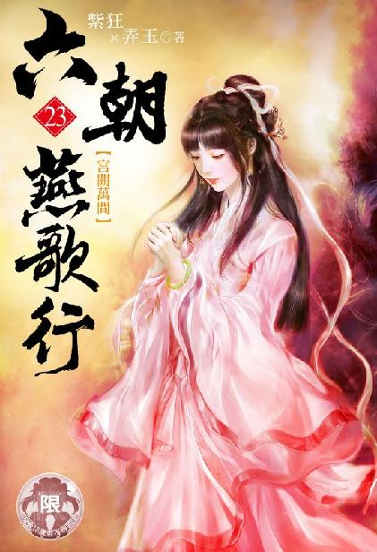

唐国篇
出版日期：2021年 10月 31日
【本集内容简介】
被内侍们轮番凌辱的萧太后，全都被身为亲生儿子的李昂看进眼底……
萧太后在宫内被内侍们轮番凌辱的画面，透过全息影像，全都被身为亲生儿子的李昂看进眼底，而李昂自己也必须被迫看着杨妃在眼前被程宗扬肆意奸淫……
不只收了杨妃，程宗扬就连李昂的胞妹──安乐公主也一并带回了内宅，还直接将两人丢给了吕雉……
※ ※ ※ ※ ※
银枪一拧，碗口大的红缨旋转着张开，雪亮的枪锋从红缨间吐出，宛如流星般划破夜幕，刺向黑衣人的咽喉。
枪尖凛冽的寒光映在黑衣人眼中，那黑衣人瞳孔收缩，紧盯着枪锋的来势，翻腕侧肩，横刀封格。
枪锋掠至中途，忽然一凝，就像是连贯的画面中间，出现了瞬间的卡顿与延迟，接着再次递出。
就这短短一瞬，生死立判。原本应该封住银枪的长刀只格了个空，枪锋精准地贴着刀背掠过。“噗”的一声，刺进黑衣人颈下，接着一拧，将他喉咙撕开。
一团血花飞溅而出，黑衣人仰面倒地，喉咙几乎被切断的头颅歪在一边。
长枪随意一抖，将枪锋上的血珠甩在雪地上。薛礼将银枪扛在肩上，头也不回地踏入林中。
“老大。”手下几名兄弟围了过来。
“没事了。”薛礼轻松地说道：“几个藏头露尾的追兵，被我干掉三个，跑了一个。”
“阉狗派来的？”
“听声音不像。”薛礼道：“倒像是护院之类的小脚色。”
“乐少将军跑得可真利落。”姜兴霸奚落道：“听说窥基那边出事，立马脚底抹油，溜得飞快。还窥基的入室弟子呢，什么酒肉师徒。”
王心鹤抱怨道：“专门让咱们兄弟断后就不说了，连个接应的人都没有。大冷的天，缺衣少食的，连口热汤都喝不上，咱们银枪效节都什么时候混得这么惨了？”
“要是骂姓乐的能骂饱，你们可千万别拦我，”薛礼道：“我能从长安一路骂到魏博去。能吗？那还骂个屁啊，留口热气暖暖身子也好。”
薛礼拿起长枪，在未融的雪地上画出山川地理，指点着说道：“咱们现在在长安以北，渭水以南。姓乐的应该已经过了渭水，运气好的话，差不多能赶在阉狗的追兵之前逃出去。断后的事咱们算是办完了，不过咱们兄弟可就麻烦了，这时辰阉狗的追兵肯定已经赶到前头，渭水沿岸各处渡口已经得了信。”
“闯过去！”周春道：“咱们九个人，抢条小船足够使了。”
薛礼摸着下巴思索片刻，“太险。万一被人缠住，怕是一个都走不了。”
周春道：“老大，你拿主意！我们都听你的！”
薛礼持枪在雪地上划了一道：“咱们不走渭水，往西南方，去蓝田。”
姜兴霸道：“那不是离魏博越来越远了吗？”
“大家都知道走渭水最快，那些追兵肯定也知道，这会儿神策军的大队人马已经出动，此地离渭水虽然近，一路上却是步步杀机，撞上便是九死一生。反倒是西南方，眼下兵力最是空虚。咱们干脆反其道而行之，从蓝田穿过山区，走云水北返。”
众人道：“往西南走？我们路不熟啊。”
薛礼道：“我走过。咱们都带着马，路上雪也化得差不多了，辛苦些，今日连夜赶到蓝田，只要进了山，咱们就海阔任鱼跃，天高任鸟飞。”
薛礼持枪一扫，抹平雪上的痕迹，“事不宜迟，出发！”
众人齐声应道：“是！老大！”
九人从林中牵出马匹，踏镫上马，往西南赶去。
暮色渐深，途中商旅绝迹，一个时辰之后，众人越过一片山丘，远远看到路旁林中一点灯光。
众人略略放缓马速，将毡帽压低一些，各自握住兵刃，凝神戒备。
灯光越来越大，渐渐连成一片。片刻后，一处营地出现在视野中，它远离大路，靠近一处遮风的小丘，中间是一顶外面覆盖着鲜艳织锦的牛皮大帐，四周环绕着数顶小帐。
帐篷之间燃着篝火，最外侧数十辆大车围成一圈，上百匹牛马被牵到一处，里面人影错落，似乎是行路的大队客商在此宿营，这会儿正埋锅做饭。
薛礼心下提防，做惯生意的商贾都有相熟的脚店打尖，每日行进都是固定的里程，晓行夜宿，极少会在野外停留。何况此地离长安已近，再往前走一两个时辰就是灞桥驿，便是折回蓝田也不过一个多时辰的路程，进退有余，何必雪地宿营？
营地被蹄声惊动，两名戴着高冠大袖的文士从帐中出来，扶剑立在道旁。观其衣饰，倒像是异国来的使节。
薛礼放下长枪，挥起双手道：“我等是神策军游骑，你们是哪里来的？为何在此地停宿？”
一名文士道：“吾等乃远来行商，天时已晚，在此暂住一宿。”
薛礼马不停蹄，扬声道：“前面便是驿站，为何露宿荒野？”
那文士道：“不瞒将军，吾等听闻长安有变，暂留此处。”
薛礼点了点头，“原来如此。你们可见到有身着绿袍的官员从此路过？”
两名文士交换了一个眼色，其中一人道：“未曾。”
薛礼道：“你们在此宿营，且需小心，若是见到可疑人等，即刻报官！”
两名文士应了一声，双方擦肩而过，便即各奔东西。
那两名文士盯着众人，直到薛礼等人的身影完全消失，才松开剑柄，匆匆返回营地。
“主上，”两人在大帐外躬身禀道：“适才有长安军士路过，沿途追捕逃亡乱党。”
帐内传来一道粗犷的笑声，“含元殿上狐兔行，花萼楼前荆棘满。内库烧为锦绣灰，天街踏尽公卿骨。史某运气不错，总算没有来迟。”
两人劝道：“主上，长安大乱，此时入城未免太险。”
“若是局面已定，我干嘛还来长安？来人，给两位赐酒！今晚共谋一醉，明日便即进城。”
帐帘掀开，义姁托着一只金盘出来，盘上放着两只七宝镶嵌的金樽，樽中盛着色如琥珀的美酒。
两人肃然拱手，举樽共饮，“多谢主上。”
大明宫。蓬莱秘阁。
幽暗的精舍内，一只巨大的光球悬在半空，不停变幻光影。
光球中的影像剧烈地旋转着，飞快掠过沟渠、古木、枯藤、宫墙、层层叠叠的假山石……
忽然，一角飞檐出现在光球内。视角蓦然固定下来，接着视野仿佛被牵引着一样，毫无阻隔地穿过重重树影，然后是紧闭的窗棂，低垂的帐幔……
片刻后，昏暗的光线蓦然一亮，光球中映出一座金碧辉煌的宫室。
数以百计的灯烛高低错落，占满了宫殿内部的空间。殿中摆着一张华丽的床榻，四支丈许高的床柱雕龙绘凤，四周垂着及地的珠帘，雪白的轻纱。榻前两只铜炉烧得正旺，即使只是虚拟的影像，也仿佛能感受到炉中的滚滚热浪。
“啪”的一声，一条黑色的皮鞭落下，鲜血雨点般溅起。
一具赤裸的女体伏在榻旁，她双手被一只手枷锁住，口中塞着布团，皮鞭落下，只微微痉挛了一下，早已昏死过去。
两名戴着幞头的白衣内侍高举皮鞭，下死力轮番抽打。那女子原本光滑的粉背被抽得皮开肉绽，鲜血横流，渗入身下的地毯中。
伴随着皮鞭“噼噼啪啪”的抽打声，床榻另一侧传来阵阵尖笑。
帘幕低垂，红烛高烧，绣着无数缠枝牡丹的帷帐内摆着一张坐榻，一名黄衫内侍倚在榻上，手中晃着一根马鞭，身旁六七名内侍围成一圈，阴鸷的眼中流露出淫邪的快意，不时发出夜枭般的尖笑声。
一名头戴珠冠的丽人伏在内侍脚前，她额头贴着地面，那张风姿犹存的玉脸羞惧交加，凄声道：“都是哀家教诲不严，求公公原谅……”
“原谅？”黄衫内侍阴声道：“拜你那好儿子所赐，今日宫里宫外可是死了几千人，你说，让咱家怎生原谅你？”
那丽人羞噤难言，帘外鞭打声传来，仿佛落在她身上，使她身体随之颤抖。
忽然帐外传来一声闷哑的惨叫，便再无声息。
一名内侍尖声道：“禀公公，那贱婢已然毙命。”
黄衫内侍道：“拖出去。”
“是。”白衣内侍抛下皮鞭，扯住那女子的发髻，拽到一旁。后面几名小内侍摊开一张草席，将尸体胡乱一卷，拖到殿外。
室中光影变幻，映出程宗扬紧蹙的眉头。
看着那名被生生鞭笞致死的宫人，他下意识地咬紧牙关，腮侧显露出刀削般坚硬的线条。
李昂和杨妃瞪大眼睛，望着面前的影像，目中满是难以置信的惊愕与恐惧。
那只光球悬浮在半人高的位置，周围轮廓分明，就仿佛在幽暗的室内切割出一片独立的空间，将那座灯火通明的宫殿挪移过来。光球中的影像如此鲜明而清晰，嚣张而凶残的宦官，鲜血淋淋的捶笞，凄惨而无辜的死者，还有惶惧不安的华服丽人，就像发生在眼前一样，一切都真实得触手可及。
即使程宗扬本人，第一次接触这种完全超越时代的全息影像时，都为之震撼不已，何况两个连平面摄影都未见过的六朝人？
李昂与杨妃目瞪口呆，一时间被巨大的震惊所压倒，本能地生出惧意。
“长生殿女官六人，已打杀三人；服侍的宫人二十一人，已打杀十二人。”黄衫内侍用马鞭挑起丽人的下巴，细声细气地说道：“娘娘说，这些死人，该怎么原谅你？”
那丽人泪水涟涟地泣声道：“但……但凭公公吩咐……”
“哟，这可怎么说的？咱家一个下三滥的奴才，怎敢吩咐娘娘？你这是寒碜我呢。”黄衫内侍跷起脚，对那丽人道：“眼看快入寝了，要不，先给娘娘沐浴更衣吧。”
那丽人颤声道：“公公，须给哀家几分体面……”
黄衫内侍脸色瞬间变得狰狞无比，他抄起马鞭，重重抽在那丽人身上。
丽人痛呼声中，黄衫内侍恶狠狠道：“体面？你这贱婢！原本不过是宫里听任使唤的下人！若不是我们这些内臣鼎力相助，扶持你那好儿子当了皇帝，哪里有你今日的荣华富贵？偏偏你们母子俩狼心狗肺，非但不思还报我等的恩情，反而恩将仇报，要置我等于死地！体面？哪里要给你什么体面！”
那丽人又痛又怕，伏在地上泣声不绝。
“扒了她的衣服！”黄衫内侍喝道：“给太后娘娘好生洗干净！”
尖笑声中，周围的内侍一起动手，将萧氏宫裳扯落，露出白馥馥的玉体，然后架起她的手脚，像平常洗沐一样，在她身上四下揉搓。
“娘娘当心，今儿个这水有点儿烫。”
“给娘娘的乳儿好生搓搓。”
“有请娘娘抬抬尊臀，奴才给娘娘下边洗洗。”
萧太后羞耻得哭了起来，但被众人按住手脚，动弹不得，只能任由那些阉奴装作捧水执巾，在她赤裸的胴体上四处揉捏。
“娘娘，该给你洗屄眼儿了。”
那些内侍嘻笑着，将丽人身子抬起，抱着她雪白的大腿朝两边张开，将她下体的羞处展露出来，一边谄笑道：“干爹，劳你老人家亲自动手。”
萧太后挣扎不得，只能泣声哀求。
黄衫内侍对她的哀求声置若惘闻，笑道：“立如沙弥合掌，坐如红莲瓣开，啧啧，咱们娘娘这下边，像不像一瓣红莲？”
“像！可真像！”
黄衫内侍拖长声音道：“咱们那位皇上啊，可就是从这儿出来的。”
众内侍齐声尖笑，犹如无数夜猫子聚在华丽的宫室中。
萧氏身无寸缕，被人赤条条架在半空，羞得紧闭双目，咬住唇瓣，泪水滚滚而落。忽然她痛叫一声，却是那名黄衫内侍举起马鞭，对着她的穴口捅了进去。
那根马鞭用硬木制成，有拇指粗细，顶端镶着金箍，嵌着皮质的鞭梢。黄衫内侍一边戳弄，一边笑道：“奴才给娘娘里边洗洗。”
“啊……啊……”萧太后颦着眉头，痛得不住低叫。
“对！就是这样！”黄衫内侍道：“女人的屄眼儿一缩一缩的才得趣。你们瞧，一会儿就该滴水了。”
黄衫内侍说着，猛然一插，然后松开手。
萧氏的痛叫声中，只见那根马鞭斜着插在她阴门内，穴口紧紧夹住鞭身，不停晃动。
正耍弄间，殿门“咣”的推开，一名貂裘太监踏进殿内，拖着嗓子道：“你们几个，做什么呢？”
黄衫内侍立马小跑着迎上来，对着比自己还年轻的郄志荣堆笑道：“干爹，你老人家来了。这不是依干爹的吩咐，正给她好看呢吗？”
“哎哟，这么长的马鞭都戳到萧娘娘的屄眼儿里头了？”郄志荣掀开帘子看了一眼，笑道：“不愧是王枢密使一手调教出来的，这手艺可是亲传的。我没旁的事，就是过来歇歇，你们甭管我，接着来啊。”
萧氏哽咽道：“公公，饶我了吧……”
“娘娘这话说的……”郄志荣一脸苦笑地摊开双手，“小的倒是想，可没这个胆子啊。”
“哀家真不知道皇上到底做了什么，得罪了公公们……呜呜……”
“可别哭了，瞧着怪可怜的。”郄志荣摆出一副同情的面孔，“我这么跟你说吧，今日朝会上乱党谋反，北司有职位的大太监死了一片。仇公公命都不要，好不容易护着皇上从乱党手里脱身，谁知道啊……这事是居然都是娘娘你那好儿子一手安排好的。仇公公拼命救驾，却不知咱们皇上心这么狠，不光仇公公在宫里当差的四个儿子都被杀得干干净净，仅剩的一个还险些被刺客杀死，连家都被烧得一干二净。”
郄志荣长叹一声，“仇公公五个儿子，说起来一共十个蛋蛋，如今就剩了一颗，还不知道往后能不能用。娘娘自己品味品味，仇公公心里是个什么滋味？”
萧太后大哭不止。
郄志荣装模作样地板起面孔，“你要再哭，我可就甩手走人了。”
萧太后连忙咬住嘴唇，拼命摇头。
“得知皇上竟然干出这等卑鄙的勾当，宫中上下都伤心透了。”郄志荣道：“皇上最亲信的鱼公公大哭一场，说是摊上这么个主子，没脸见人，当场跳了太液池，要以死明志，被仇公公好不容易救了下来。皇上后宫那些妃嫔也觉得愧对咱们这些忠心耿耿的奴才，纷纷取了白绫，投缳自尽，被宫里的公公们好一番开导，才勉强忍辱偷生。”
“几个有身份的，像杨贤妃、王德妃，都说皇上太过无耻，做出这等不仁不义之事，愧对各位公公。为了表示歉意，争着给公公们侍寝。”郄志荣一脸感慨地说道：“咱家方才来的时候，杨贤妃刚用嘴给公公们接了尿，又专门服了助兴的秘药，自己扒着阴门，让大伙儿弄她的淫穴。说是公公们平叛辛苦，又为那个不争气的皇上操碎了心，她无以为报，只好拿身子让大伙儿消气解乏，让大伙儿都来感受一番皇上尝过的滋味……”
郄志荣挑起唇角，“太后娘娘，你觉得杨贤妃做得如何啊？”
萧太后都听得傻了，张着嘴巴，目光一片呆滞。
“娘娘肯定愿意，只是不好意思说罢了。”黄衫内侍插口道：“干爹也知道的，她原本不过是个逃难的孤女，全靠着各位公公扶持，才当上太后。皇上办了错事，连累了她们，原本应该打杀的，如今干爹法外开恩，给了她一条活路，她感激还来不及。更何况干爹一表人材，又是仇公公最得用的义子，如今有机会服侍干爹，肯定是一千个乐意，一万个乐意！”
郄志荣望着萧氏的面孔，笑吟吟道：“那可未必。娘娘富贵久了，看不上咱这种奴才也是常事。”说着他话风一转，“殿里伺候的还剩了几人？”
“回干爹，长生殿的女官还剩了三个，宫人还剩了九个。”
郄志荣翻脸犹如翻书，厉声道：“怎么还剩了这么些？公公家里头出了那等事，你们不紧着给公公出气，还敢拖延放纵？咱家原本念着你们是王枢密使的手里人，手段够使，才给你们一个献殷勤的机会，你们这是怎么着？没把仇公公的事放心上是吧？”
郄志荣叹道：“怪不得娘娘心里头不顺呢。这火候还差着呢。”
黄衫内侍抬手给了自己一记耳光，“都是孩儿不晓事！白费了爹爹的一片苦心！孩儿这就让人把她们都带过来，当着娘娘的面给她们挨个剥皮拆骨。”
萧太后哀声道：“公公饶命……”
“嗐，干嘛说得这么恶心？”郄志荣埋怨了一句，假惺惺道：“缢死留个全尸便是了。不然弄得娘娘以为咱家是吓唬她似的。这事要你情我愿才好，是不是啊，太后娘娘？”
“是……”
郄志荣挑了挑眉梢，“那你是情愿啊，还是不情愿啊？”
“哀家情愿向公公赔罪……给……给公公侍寝……”
“胡说！”黄衫内侍喝斥道：“什么赔罪！分明是先帝驾崩多年，娘娘兰宫寂寞，今日见干爹风姿不凡，禁不住动了春心，主动求欢。这可是佳话啊。”
郄志荣笑道：“就是这个理儿。”
萧太后忍着羞耻应道：“是……”
郄志荣大笑一声，大模大样地登榻而坐，拍了拍大腿。
几名内侍有心凑趣，却被自家干爹挥手摒开。黄衫内侍亲手扶着萧太后送到帐内。
郄志荣一把搂住萧氏，将她白馥馥的身子抱到怀里，笑道：“娘娘十六岁有了皇上，如今也有四旬了，平日里锦衣玉食养着，看着还跟大姑娘一样。”
说着凑过脸去，一边摇唇鼓舌地亲吻不已，一边上下摩弄。良久才松开嘴，然后又教她亲手给自己脱靴解袜，除去衣物，露出残缺的下体。
他那里却不是空无一物，而是从创口处长出一截紫黑红肿的肉茎，就像是一团丑陋的肉瘤。
萧太后在宫中多年，偶尔也听说有些净过身的太监，创口会长出息肉，却不知会如此丑恶。
郄志荣却颇为自负，当身边所有人都丧失了阴茎，任何一点滋生的赘肉都成了太监们艳羡的对象，甚至被视为阳具复生的吉兆，还附会出各种私下相传的秘技神术。
比如秘技中的玉津润物，称女子的津液有助于阳具复生，有身份的太监便争相娶妻纳妾，让自己的妻妾含津吸吮残根，乃至用女子的阴津涂抹赘肉。
郄志荣翻身将萧太后压在身下，把残缺的阳物塞到她口中，用力挺动，一边扒开她的下体，埋头咂弄舔舐，正是秘技中所谓的采阴补阳。
精舍内，李昂呆若木鸡，手指抠进掌心的伤口也浑然不觉。
杨妃倚在程宗扬怀中，丰腴的胴体微微颤抖。
“干！这帮变态……”
即使对李昂恨之入骨，程宗扬也看得心生不忍。
萧氏对自己儿子的谋划一无所知，好端端当着她的太后，突然间天翻地覆，沦为阉奴们蹂躏的玩物。而这一切的始作俑者，唐皇李昂神情呆滞，仿佛魂魄被人抽走，躯体只剩下一具空壳。
“废物！”
程宗扬啐了一口，伸手想关掉摄像机，又停了下来，一把将杨妃抱到榻上，合身压上。
晋昌坊。大慈恩寺。
从大雁塔上望去，无数火把在各个坊市间奔走移动，聚散不定。
城中的宵禁已尽成虚设，原本只敢在暗巷剪径的蟊贼盗匪，此时公然呼朋唤类，明火执仗地打家劫舍。
最受荼毒的，莫过于各家寺庙。几乎是下午刚一乱起，长安城的恶少之间便流传起谁闯进寺庙，大发横财的种种神话。
某人无意中闯入一间旧僧舍，却是僧人暗设的秘库，里面金铢堆积如山；
有人捡了一只满是泥污的钵盂回家，略一洗刷，却是通体赤金；
有人不小心打碎了某间庵堂的木鱼，里面竟然滚出上百颗珍珠……
各种奇闻异事愈传愈是离奇，长安城内大大小小二百余间寺庙彻底遭了殃，不但财物被夺，连吃饭的钵盂，诵经的木鱼都被尽数抢走砸毁，甚至有人掘地三尺，试图找出寺中藏宝的秘库。
“砸得好，砸得好！”
大雁塔上，一名布衣褴褛的老僧抚掌大笑，“佛祖在上，释门当有此难！长安当有此劫！”
在他身后，窥基盘膝而坐，紫色的袈裟沉甸甸拖在地上，仿佛浸满了鲜血，散发出浓重的血腥味。
他目光森然，身后的阴影仿佛鬼魅一般蠕蠕而动。
“帛九避不出面，莫非将贫僧当成了棋子抛掷出来，便不理不顾了？”
那老僧手舞足蹈，疯疯癫癫地说道：“我这秃驴就是个该死的混账王八蛋，狗屁不通的破落腌臜，屎一般的东西。九爷的心思我不晓得，只是这长安城的焰火着实好看，比前日的上元盛景还好看！美得紧！美得紧！”
窥基面色阴沉，目光犹如噬人一般，忽然他神情一凝，“帛九？”
塔门处传来一声轻叹，接着露出一柄折扇，轻轻扇动着，曼声咏叹道：“大柄若在手，清风满天下……”
那折扇越摇越快，上下翻飞，舞得蝶翅一般。那人咳了两声，“窥基师兄是不是怨我不守信用？”
窥基双目精光大放，“少装神弄鬼！出来说话！”
“塔里有毒，我就不进去了。”
窥基神情一变，立刻往体内探去。
“此毒无色无味，专破丹田气海，沾染少许当是无妨，只是我身上有伤，还是不沾的好。”
窥基冷冷道：“九爷的琉璃玉体，堪比佛门金刚不坏，普天之下，谁能伤到九爷？”
“师兄过誉了。我这点儿不起眼的小术，哪里比得了师兄精修的密宗真法，能请尸陀林主降身？”
窥基森然道：“你可是在我面前起过誓，称沮渠二世大师神智已昏，病重不能理事。此番又当何讲？”
那柄折扇摇得愈发急了，低叹道：“沮渠大师病重不起是我亲眼所见，绝无可疑，只是没想到，释特昧普那下三滥的泼才竟如此不讲规矩，为了跟师兄别苗头，连佛门的体统都不要了。因为一己之私，连十方丛林的根基都敢挖，真不怕十方丛林倒下来砸死他。”
“你一向自负智计，自诩将世人玩弄于掌股之上，如今大慈恩寺已入其手，唐国佛门尽以其马首是瞻，九爷又当何讲？”
“乱拳打死老师傅罢了，那金毛法王再猖狂，终究只是个外人，且看他能得意到几时。”
窥基嗤然道：“事到如今还哓哓不休。佛门已失，宫中尽入群阉之手。这就是你的智计？”
“我帛九是生意人，讲的是生意。释特昧普坏的是佛门名声，关我何事？至于朝廷，王涯强行榷茶之法，连月夺民茶树，移为官办。本行因此已损失数万金铢，若让他推行下去，一年之失只怕不下数十万。不诛杀此獠，难解我帛九心头之恨。”
窥基不屑地说道：“强辩而已。”
“师兄想必知道，我帛氏对佛门向来尊崇有加，施财舍物，从无二话。”
“你们暗中襄助观海，不惜一掷万金，助其远赴天竺，求佛门正法，以为老衲不知道吗？”
折扇停顿了一下，然后苦笑道：“一点小手段，让师兄见笑了。”
“你们苦心孤诣，布下观海这枚暗棋，还未出手，便被释特昧普一把掀翻棋盘，多年心血，尽为他人作了嫁衣，何其荒唐。”
“师兄教训的是。观海拿了我们那么多钱，一点儿事都没办，这事儿可不能就这么算了。”
窥基冷哼一声，拿起膝上的禅杖，拔身而起，“长安已成一盘烂账，你们尽管收拾。老衲自赴寒林，就此别过。”
“且慢，”那柄折扇“啪”的收起，“师兄不想知道那位程侯的来意么？”
窥基握紧禅杖，双目精光大放。
案几狼藉，红烛上的灯焰摇晃着，结出卷曲的灯花。
铺设着茵席的御榻上，此时正激情四射。两具赤裸的肉体交叠在一起，上面那名男子肩宽背挺，结实的身躯年轻而又精壮，起伏间，腰背强健的肌肉不时隆起，充满男性的力量。
下方的女子凤钗珠冠，生得面如桃花，雪肤花貌，风情万种，那具光洁的玉体柔润而又白腻，洋溢着丰腴肉感的韵致。她白美的双腿弯曲着张开，以一个不设防的姿势裸裎在男子身下，双手攀着御榻边缘，随着男子的挺动，悬空的足尖一摇一晃。
程宗扬俯着身体，坚硬的肉棒在杨妃柔艳的嫩穴内大力抽送，每一下都尽根而入，干得穴口淫液四溅。
杨妃被干得花枝乱颤，红唇间发出“啊！啊！”的浪叫声。
两人身边，是一片奇特的景像。
一片轮廓清晰的光影悬浮在半空中，里面一名贵妇以同样的姿势裸裎榻上，同样的头戴凤钗，身无寸缕，敞露着熟艳的淫穴，正被人肆意奸淫。
不同的是，压在她身上的是个非男非女的阉人。那阉奴腹下绑着一块皮革，上面装着一根木制的假阳具，此时一边挺动，一边得意地大笑。
两人四周围着一帮光下巴的内侍，此时一边按住贵妇的手脚，一边扒开她的淫穴，嘻笑观赏木棒在她穴中进出的淫态。
两处淫戏近在咫尺，仿佛一伸手就能触及彼此。
一个戴着面纱的美妙身影伏在御榻旁，潘金莲双手分开杨妃的蜜穴，一边揉弄着她娇嫩的阴唇，一边轻轻挑逗她的花蒂。
杨妃美目含泪，颤声道：“主子轻着些……奴儿下面……受不住了……”
潘金莲柔声道：“你看旁边那位，不也受住了？今日被主子收用过，你才真正做了女人呢。”
杨妃双手捏紧床榻边缘，丰润的肉体在主人的挺弄下颤抖不已。她昂着头，喉中发出不连贯的低叫。
阳物雨点般撞在花心上，蜜穴越来越热，随着阳具的进出，湿腻的蜜腔不住痉挛着收紧。忽然间，仿佛一个塞子被拔出，体内猛然一震，一股温润的暖液喷涌而出。
杨妃双手放开御榻，紧紧搂住程宗扬的腰背，玉体向上弓起，整个人都在他身下战栗着。
从未有过剧烈的高潮仿佛抽空了她所有的力气，她全部的心神都集中在下体的快感上。肉体的刺激如此强烈，使得她气都喘不过来，只觉眼前阵阵发黑，金星乱冒，接着娇躯一软，昏厥过去。
程宗扬一轮急攻，刚用房中术送过一道真气，榨出她的阴精，谁知杨妃就被干晕了。
杨妃不懂双修，完全是被动受淫，程宗扬也是大意了，没想到她这么一个体态丰腴的熟艳妇人，竟然这么不济事，小穴嫩得跟处子一样，不堪侵伐。
再采补下去也不是不行，但未免太不人道，要还是李昂的老婆，自己白嫖也就嫖了，随便怎么玩都不用在乎，但现在自己好歹花了钱买来的，只是看在一枚铜铢的面子上，也不好再干下去。
潘金莲切了切杨妃的脉相，“无妨，只是气血激荡，以致血不归心，神魂失守。略微休息片刻，待气血平复便是。”
程宗扬无奈拔出阳具，一边用杨妃的衣物揩抹下身，一边道：“你们遇到的那些鲛人确定是冲着小紫去的？”
“看情形，他们并未寻到紫姑娘的踪迹。”
“感觉鱼玄机古古怪怪的，”程宗扬皱起眉头，“她跟那个鱼朝恩，到底打的什么主意？”
“人心难测，何况奴家与她不熟。不过她与太真公主交情颇好，即便有些心思，也未必会对太真公主不利。”
“你倒是好心肠，”程宗扬把衣物丢在杨妃赤裸的身体上，笑道：“我还想着潘仙子会心存不忍呢，怎么看着比我还积极？”
“自从在金吾仗院的监牢内，看到那些身世清白的女子被阉奴挟忿报复，我便对这位皇上再无半点悲悯。医者仁心，难医不治之人。此间因果，皆由李昂作恶而起，报应在他的妃嫔身上也没有什么好委屈的……啊！”
潘金莲痛叫一声，却是程宗扬一手伸到她衣内，熟稔地拧住她的乳头。
程宗扬道：“你是不是心怀悲悯之外，其实内心深处还有点兴奋？恨不得代替她们受辱？”
“只能是主人才可以。啊……”潘金莲一边婉转低叫，一边咬住唇瓣，眼中流淌出蜜糖般的媚意。她主动托出雪乳，任由主人捻住她的乳头，用力揉捏，直到被金簪刺穿的乳眼中挤出几滴殷红的血珠。
“真乖。”程宗扬满意地弹掉血珠，然后往角落里瞟了一眼，冷笑道：“啧啧，我还当咱们这位皇上死了呢，都这时候了，居然还有心情偷窥你。”
潘金莲道：“便让他看好了，反正他也看不了多久。”
“那可不行。”程宗扬拉起她的衣襟，将她丰挺的雪乳遮掩起来，“我的女人，凭什么让他看？我的女人都跟珍宝一样，想看？他也配！”
“要看，看这个好了。”
程宗扬送过一道真气，将杨妃唤醒，然后把她拖起来，一手揽住她的杨柳细腰，让她站直，吩咐道：“把你的浪屄扒开，让皇上看个过瘾。”
杨妃高潮到昏厥，对这位主人已经是完全服帖，言听计从，乖顺无比。此时被主人搂着腰，羞赧地挺起下体，用指尖剥开秘处，露出刚刚交合过，淫水淋漓的蜜穴。
程宗扬手臂环着杨妃的腰肢，手指伸到她腹下，把玩着那只水汪汪的美穴，对李昂嘲笑道：“看到了吧？你爱妃的淫穴被我肏成了这副模样，这会儿屄洞还在冒淫水，贱不贱？”
李昂怔怔望着那只滴水的淫穴，目光一片混沌。
杨妃双颊酡红，眼中带着醉人的羞意，只是望向李昂时，流露出一丝幽怨。
李昂的视线仿佛失去焦点一样游移不定，始终没有与杨妃的目光对视。
“啊……”杨妃一声轻呼，被主人托着膝弯，抬起一条玉腿。接着那根粗长的阳具伸来，对着她的穴口捅了进去。
阳具在柔嫩多汁的蜜穴中挺弄着，发出“叽咛叽咛”的腻响，杨妃玉颊越来越红，她一只足尖勉强撑在地上，站立不稳，只能依在主人身上。
但主人接下来一句话，让她脸色一下变得苍白。
“给皇上看个好玩的。”程宗扬把阳具留在杨妃蜜穴内，摸着她的屁股道：“皇上爱妃的后面还没用过呢，本侯这会儿正好有兴致，好生给你爱妃的后庭开个苞。”
“这可是你爱妃的第一次肛交，皇上一会儿可要仔细看着，你爱妃怎么像最下贱的娼妓一样，被我干屁眼儿的。”
杨妃央求道：“不要……主子……”
“贱婢！你不会以为自己还是什么尊贵荣宠的皇妃吧？”程宗扬毫不客气地说道：“醒醒！你已经被那个狗屁皇帝卖给我了。一枚铜铢的身价，比最下贱的娼妓还便宜。连皇上都认账，难道你还觉得自己不够贱吗？”
杨妃玉颊时红时白，忽然颤抖着扬声道：“皇上……你看清楚了吗？臣妾的身子刚被人奸淫过，便是跟皇上签过文契，用一枚铜铢买下妾身的主人。眼下主人要用臣妾的后庭……圣上！”
杨妃说着，泪如雨下，“你若是还有一点担当，还有丝毫的廉耻，为了冤死的大臣，后宫的眷属，还请圣上自尽！臣妾绝不苟生，宁愿以死洗耻。即便魂入九幽黄泉，也心甘情愿……圣上……”
李昂僵硬地移开目光，垂着头喃喃道：“朕……不能死……朕不能死……”
杨妃绝望地闭上眼睛。
“有够坚强的，这都能忍？”
寒光一闪，程宗扬提起长刀，抵在李昂颈中，“让你看呢，这会儿怎么不看了？抬起头，仔细看着！敢闭眼，我就杀了你！”
李昂惊恐地扬起脖子，一动也不敢动。
“笃”的一声，程宗扬将长刀插在铺着藤席的地板上。
“看到了吧？你这位皇上心里只有他自己，别的人，即使他的生母被那些阉狗凌辱，他也能不管不顾，何况你一个妃子？能自私无耻到这种地步的东西，我这辈子都没有见过，简直是绝顶的奇葩！”
程宗扬挽住杨妃的腰身，“现在该知道了吧？你卖给我，一点都不亏。”
杨妃用手背抹去泪水，低声道：“是，主人……”
“很好，知道自己的身份就乖着些。”程宗扬拍了拍她的腰臀，“现在趴过去，把屁股翘起来。”
杨妃听话地伏下身，按照主人的吩咐，并起双膝，将那只浑圆的雪臀高高翘起，正对着角落的方向。
程宗扬抓住美妇白滑的臀肉，“这屁股漂亮吧？又圆又大，丰腴性感，白光光的，又香艳又刺激，让人看着就想肏。以前皇上也玩过吧？不过它现在是我的了，你只有看的份。”
“把屁股扒开，”程宗扬朝杨妃臀上打了一记，“屁眼儿露出来。”
杨妃双手掩面，丰腴的肉体微微颤抖。
“你还有什么好纠结的呢？”潘金莲望着李昂，柔声道：“主子内宅的奴婢或死或伤，还有几个失了踪，下落不明的，都是这位皇上干的好事。如今主子花一枚铜铢买下你，本想让这位皇上自己知耻，免得污了自己的手。可谁知你这位皇上如此厚颜，主子用了你的淫穴，也不肯自尽。没奈何，只好连你身上没用过的地方，主子也要当着皇上的面奸弄一番，一来好让皇上迷途知返，二来也好出了心头这口恶气。”
潘金莲拉起杨妃的双手，让她抱住臀肉，然后在她耳边吹了口气，“皇上在看着你呢。”
杨妃原本羞耻万端，听到这句话，反而一咬牙，玉指往两边用力，主动将臀肉分开，露出雪臀间柔艳的嫩肛。
“好漂亮的屁眼儿……能亲眼看着娘娘这么标致的屁眼儿被人开苞，皇上真有眼福呢。”潘金莲摩挲着杨妃白滑的腰臀，在她耳边道：“你说是不是？”
“圣上一纸书契，将妾身卖予侯爷，妾身已与圣上恩断义绝，再无瓜葛。从今往后，唯有服侍主人而已。”杨妃凄然道：“贱妾已非完璧之身，承蒙主人不弃，愿奉此不洁之躯，以娱主人。今奴婢前阴已蒙主人临幸，愿以后庭之柔肠，供主人媟戏取乐。”
“不是吧？”程宗扬讶然道：“一个后宫妃嫔，居然这么有文艺范？倒是小看你了。”
“妾身已为程侯所有，自不敢相瞒，妾身自幼习文，宫中案牍书敕，多半出自妾身之手。”她轻轻耻笑了一声，“毕竟圣上连那些太监都信不过，唯有臣妾不敢有负圣上。”
通文墨？程宗扬本来只是想拿她在李昂面前出口恶气，这会儿倒是觉得这一枚铜铢花得挺值。
“抱住屁股，本侯要给你的屁眼儿开苞了。”
杨妃将白腻的臀肉竭力掰开，她身体丰腴，一身白花花的美肉像丝棉一样，肉感十足。尤其那只雪臀，白光光的，又大又圆，充满了熟艳的风情。
怒胀的阳具滑进臀沟，顶住那只柔嫩的肉孔，慢慢往里顶去。
沾上淫水的肛洞又软又滑，在龟头的重压下没有任何抵抗，便圆圆地扩张开来，很快就到了极限。
杨妃咬住红唇，白皙的纤指陷入丰腻的臀肉中，满眼雪白的肌肤间，指甲上涂的丹蔻红得耀眼。
粗大的阳具直挺挺顶在臀间，龟头撑开肛洞，一点点挤入体内。忽然龟头一沉，已经被肛洞吞没。
杨妃眉头颦紧，咬住唇瓣，当阳物破体而入时，鼻中禁不住发出一声痛哼，美目瞬间迸出泪花。
粗硬的肉棒紧紧卡在肛内，一缕鲜血从柔嫩的肛洞中溢出，染红了血脉贲张的棒身。
“娘娘屁眼儿的温度很高啊，里面这么热。”
程宗扬在杨妃肛中挺动起来，充满弹性的肛蕾紧紧箍着棒身，那种强烈的紧握感，比淫穴更紧致。更让他享受的，则是满满的征服欲和报复的快感。
唐皇的爱妃，像条母狗一样伏在自己脚下，乖乖翘起屁股，任由自己挺起阳物，干进她未经人事的屁眼儿中。
而这一切，都是当着李昂的面！
这次长安之行，自己只想着救卓美人儿出来，结果什么都没干，就莫名其妙被李昂当成死敌。
孙暖身死，泉奴失踪，惊理断腕，蛇奴和罂奴下落不明，连死丫头都没了音讯……若不能狠狠报复回去，出了这口恶气，自己念头不通达！
“啊！”杨妃痛叫失声。
粗大的阳具毫不留情地捅入肛内，屁眼儿被肉棒粗暴地撕裂，痛楚甚至超过当初破体。
肉棒尽根而入，彻底干穿美妃的屁眼儿，然后向外拔出。受创的肛蕾翻绽过来，连同一截肠壁暴露在空气中，只见一圈红肉沿着阳物绽开，裹在肉棒周围，微微颤抖。
紧接着阳具再次贯入，刚刚翻出的屁眼儿被带入体内，伴随着粗暴的力道，几滴星星点点的血珠飞溅出来，落在白艳的臀沟间。
“不愧是皇上的爱妃，这身子真跟水做的一样，”程宗扬嘲讽道：“屁股滑溜溜的，屁眼儿里面又暖又紧，肏起来真过瘾！”
杨妃颤声道：“好疼……奴儿的后面都要被干碎了……”
程宗扬重重挺入，“皇上听到了吧？你的爱妃被我干得讨饶呢。”
“不用怕。”潘金莲柔声安慰道：“我这里有上好的伤药，便是伤得再重，一剂用过，也能恢复如初，不会留下伤痕。”
“怪不得你对自己下手也那么狠呢。”程宗扬恍然大悟，屈指在她乳尖弹了一记，“医术精湛，原来还有这种好处。”
潘金莲乳头被弹得在衣内一阵乱颤，一面道：“医者自当以身试药。”
程宗扬遗憾地说道：“可惜你不会处女膜修补术，不然等我给你开过苞，你再自己补好，也好瞒过你师门。”
潘金莲讶然道：“可以修补的吗？”
“应该可以吧。”
程宗扬也没把握，依照他的理解，说处女膜就是一层膜而已，但六朝的处女显然并非如此。这一点自己亲身体验过，是否处子之身，对自己伤势的禆益天差地远。危月燕被自己采补到死，也比不上白霓裳当日的元红初破。
程宗扬猜测，即使有处女膜修复术，修补好的处女大概也跟杨妃的肛门处女差不多，仅仅是个噱头罢了，不会有处子元红的效果。
话说回来，即使在这个时空中，处子的元红真有神效，现在给自己个处子，自己还真未必下得去手。
毕竟内宅的侍姬已经不少了，单为疗伤再往内宅收人，先不说紫丫头和云如瑶愿不愿意，自己心里这个坎儿都过不去。光干不收，那更不可能了。拔屌不认人这种事，自己真干不出来。
既然潘姊儿有伤药，程宗扬更不客气，当下抛开顾忌，挺起阳具在杨妃臀间恣意抽送。
杨妃上身伏在细密的藤席上，腰臀挺起，双手抱着又圆又翘的大白屁股，被主人的肉棒插在肛中大肆挺弄。
她颦起眉头，不时痛叫出声，头上鬓发散乱，簪钗松脱，娇艳的唇瓣被咬出斑斑齿痕。随着主人的搬运，那对丰挺的乳球压在席上，前后滚动。一股殷红的血迹从白腻的臀肉间溢出，顺着大腿内侧蜿蜒淌落。
阳具挺动的速度越来越快，不知过了多久，“啊……”杨妃一声娇啼，那根阳具直挺挺捣入肠道深处，在她肛内凶猛地喷发起来。
“啵”的一声，程宗扬拔出阳具。
杨妃白艳的雪臀间留下一个直径逾寸的浑圆肉孔，原本小巧的嫩肛被干得面目全非，再没有丝毫以往的痕迹。她肛中落红淋漓，精液却被留在肠道深处，只能看到肠壁上沾着些许白浊的黏液。
潘金莲轻抚着杨妃的雪臀，柔声道：“让皇上看看你的后庭花，好生讲给他听。”
杨妃吃痛地抱住臀，朝上举起，“圣上看到了吗？臣妾的后庭花被主子开了苞，流了好多血……”
李昂目光直勾勾望着前方，口中喃喃道：“受……受国之垢，是谓社稷主；受国不祥，是为天下王……”
“朕不能死……朕天命在身……黎民百姓还等着朕去解救……”
他嘴角淌下白沫，“朕不能死……”
看着李昂自欺欺人又自我麻醉的怂样，程宗扬一阵火大，他冷哼一声，拿过案上的文契，丢在杨妃面前，“把文契签了。”
杨妃满面羞痛，那份文契已经填好姓名，只需按上指印便是。只是手边没有印泥，一时间有些手足无措。
潘金莲轻笑道：“娘娘落红尚新，何妨一用？”
说着拿起杨妃的手，放到她臀间。杨妃忍着羞痛，用指尖蘸了血迹，按在文契上。
指落契成，程宗扬卷起文契，顺手把杨妃揽在怀中。只片刻工夫，刚刚射过精的阳具重又怒勃而起，跃跃欲试。
永嘉坊。皇图天策府。
“公公。”张承业快步过来，先躬身施礼，然后道：“城中已经有了乱象。眼下各坊少年尚是劫掠财物，若是不加管束，只怕会有恶徒趁乱杀人越货。”
鱼朝恩“唔”了一声，便不再作声。
见鱼公公如此敷衍，张承业忍不住上前一步，劝说道：“公公，今日之事，虽是圣上被李训等奸贼蒙蔽，铸成这般大错，可百姓到底无辜。如今金吾卫因叛乱尽数下狱，公公执掌神策军，岂能坐视？”
鱼朝恩目不斜视，面对着皇图天策府的大门，规规矩矩地叉手而立，口中叹了一声，“我晓得，我晓得。可眼下波澜未息，我若是引兵把控全城，知道的，说我上赶着现眼，一个该死的阉狗，装什么体恤百姓？不知道的，说不定还当我有啥见不得人的心思。”
鱼朝恩唏嘘道：“如今这宫里宫外，南衙北司，老仇、老田，哪个不是惊弓之鸟？怕就怕外头的兵一进来，当场就炸了锅。刀兵一起，那可就不是死几个百姓的事喽。”
张承业默然片刻，“不用外兵的话，便是城内驻守的左右神策军，也有数千之众……”
“先不说老仇把他们看得跟眼珠子一样，就说我一声令下，能使唤得动，敢把他们放出去维护城中治安吗？”鱼朝恩道：“就眼下这乱劲儿，一个坊派个一百来人够不够？长安城一百零八坊，这就得撒出去一万来人。再说了，城里头的神策军你还不晓得？不是杀人不眨眼的骄兵悍将，就是有来头，敢惹事的少爷公子，再不然便是昼间宫中当值，夜里杀人越货的匪寇。放他们出去，城里头怕是更乱。”
张承业也是无言，半晌才道：“鱼公，眼下又当如何？”
“这会儿谁都不信谁，谁也不服谁。我不行，老仇也不行。能让大伙儿都服气的，只有一个。别急，先等着。”
鱼朝恩微微低着头，态度恭谨地迎门而立。
在他面前，雄伟的皇图天策府大门紧闭，灯火全无，如同一只庞然巨兽，无声地踞伏在夜色下。
长安各坊的混乱，到了此地便不见声息。毕竟皇图天策府在此，即使大门紧闭，府中军将禁足不出，也没有哪个不开眼的，敢在此惹事。
鱼朝恩已经在大门前立了三个时辰，便是再站上三个时辰，站到天明他也不介意。仇士良在宫中大开杀戒，连皇上都囚禁起来，风头之劲一时无两，却不知唐国真正能扛事的，正在此间。
“王爷。”天策府内，一名内侍小声道：“鱼公公还在外头候着。”
“算他有心了。”李辅国捧着茶道：“郭太皇太后那边如何？”
“还在太真观，高力士亲自带人守着。”
“太真观啊。”李辅国道：“再等等吧。”
“鱼公公那边……”
“让他等着吧。这事是他惹出来的，迟早要给我、给卫公一个交待。”
张承业也立在鱼朝恩身后，学着义父的样子，垂手静候。
不到一刻钟，坊外忽然火起，随风隐约传来几声惨叫。
张承业忍不住想要开口，鱼朝恩先叹了口气，“罢了，你去瞧瞧吧，该杀就杀，别手软，但也别惹事。”
“是！”
张承业立刻翻身上马，带着手下一队神策军，往对面的安兴坊驰去。
鱼朝恩躬着身，姿态丝毫未变。
良久，身后传来细微的脚步声，“伯父。”
鱼朝恩头也不抬地说道：“你回来啦。”
鱼玄机道：“侄女无能，未能阻止公主。”
“也怨不得你。”鱼朝恩叹道：“阿注处心积虑，太真公主这个坎儿必定绕不过去，早晚要分说一二。”
鱼玄机低声道：“伯伯，真的会有女主当国吗？”
“噤声！”鱼朝恩呵斥道：“这等荒唐之事，岂能宣之于口？”
“可是，他们不都说那个人是天机在握，所言必有深意吗？”
“都是胡扯！”鱼朝恩终于扭头看了她一眼，压低声音道：“所谓他当日点名索要你，其实只是误传。你那时还不一岁，连名字还没起呢。谁知道他说的玄机是哪个？”
“伯伯不必瞒我了。”鱼玄机道：“大哥私下里跟我说过，我周岁时抓到玄机图，以此为名，当日族中便接到武穆王的传书，指名索要玄机。”
鱼朝恩脸一黑，半晌才道：“那又如何？他当初要的玄机可是年过二八的，压根儿就对不上。反正他现在已经没了。你别多想，安安分分的待着，等过上几年，伯伯给你找个好人家，风风光光出嫁就行。”
“伯伯担心侄女出事，早早把玄机接到身边，小心呵护，玄机岂能不感念伯伯的恩德？假如真有那么一日，玄机自会还报伯父、还有族中的养育之恩。”
“别瞎说。你好生过完这一世，比什么都强。”鱼朝恩道：“只要你好端端的，他那些话便都是放屁！什么手握天机，都是乱蒙的。”
“可玄机到底还是入了道门，又被伯父安置在咸宜观。若非伯父心有所忌，又何必如此？将玄机送往他处，让他找不到不好吗？”
鱼朝恩无奈道：“得得得，就当是我怕了成吗？不光是我，王爷也怕啊。他可是说过……”
鱼朝恩说了一半，便即住口。
“他说，王爷会被皇上指使的刺客砍掉脑袋，丢进溷厕。”鱼玄机道：“他还说过，宫中将来擅权的一帮内臣，唯有仇士良能得善终，对吧？”
鱼朝恩后悔不迭，“我就不该跟你说这么多！”
鱼玄机道：“若他真的回来了呢？”
“那还能说什么？”鱼朝恩长叹道：“拼上性命也要杀了他啊。”
靖恭坊。
“我要见九爷！”
李宏双手绑在身后，脸上印着血淋淋的鞭痕，梗着脖颈叫道：“你这该死的胡狗！我鞍前马后给九爷卖命多年，九爷最信任的是我！”
“啪！”
棕发赤髯的苏沙挥起马鞭，重重抽在他脸上，恶狠狠道：“你跟窥基那贼僧做的什么勾当，老实招来！”
“姓苏的！你个该死的胡狗！血口喷人！”
苏沙像变脸一样，瞬间收起暴戾的神情，又换成商贾那副笑眯眯的模样，和颜悦色地说道：“李兄啊，你老实说了便是，何必吃这些苦头呢？”
李宏气得发抖，“当初是你亲口所言，说是九爷的吩咐，让我等暗中襄助窥基！便是到了九爷面前，我也是这般说！”
“一派胡言乱语！”
苏沙抬脚踢在他下颌处，险些把他下巴踢碎。
李宏咬紧牙关，抵死指证是苏沙亲口授意，让他与窥基等人合作，图谋汉国的舞阳程侯。
苏沙使尽手段，见李宏仍咬死不肯改口，最后无奈说道：“老实说吧，我哪里不知道你是个冤枉的？可现在九爷吃了亏，翻脸不肯认账，不得不找个替死鬼出来。说不得，只能让老兄委屈了。”
李宏翻来覆去只一句话，“我要见九爷！”
苏沙一脚把他踢晕，然后叹道：“这厮嘴巴这么硬，倒是难住我了。”
黎锦香从屏风后出来，“果真是九爷改口了？”
“九爷虽然没有明说，但咱们这些当属下的，自然要替九爷分忧。”
“九爷神龙见首不见尾，平时都不见下属。心意更是难测，万一……”
“正是如此，才要找个顶罪的。行里这几位爷，十三爷在咸阳挣了把大的，十六爷在洛都也捞了不少。还有十九爷，听说去南海这趟也翻了几倍的利。如今长安这边若是办砸了，九爷难免颜面无光。”
黎锦香神情恬淡。苏沙口口声声替九爷分忧，其实谁不知道，九爷一向不怎么理事，早在庞白两人出事之前，便年余不曾露面，行里大小事务，都交给苏沙和李宏打理。苏沙趁着城中大乱，把李宏抓起来，逼他替九爷顶罪，其实是把他办事不力的罪名都扣在李宏头上，再顺手除掉李宏，清理后患。
“多亏了你，咱们如今才有了转圆的余地，免得让九爷没脸。可前头到底输了不少，李宏这厮不肯顶罪，着实为难。”苏沙道：“他毕竟也是行里的执事，总不好打杀了。”
“苏执事是担心他见到九爷会乱说？若是除掉他，又怕九爷起疑？”
苏沙摸着腮侧的须髯，默然不语。
“属下倒有个主意。”
“哦？”
黎锦香道：“让他去见十三爷。”
“开什么玩笑？”苏沙惊道：“九爷的人，让他去见十三爷？若他投了那边呢？”
“那九爷还会饶他吗？”
苏沙连连摇头，“不可，不可。李宏在九爷手下多年，他若是转投十三爷，九爷就……”
“就知道苏执事你的忠心，这回生意上吃了亏，都是李宏背地里捣鬼。”
苏沙目光一阵闪烁，最后一拍扶手，“就是这个理！”
黎锦香瞥了地上的李宏一眼。这次给了你一条活路，能不能抓住机会，就看你自己的造化了。
“哦……”
杨妃颦起眉头，那根怒胀的阳具再次纳入体内，这回入的是前面的淫穴。
年轻的主人坐在榻上，强壮而有力的身体像大山一样可以倚靠，她赤条条跪坐在主人怀中，双手扶着主人肩膀，刚被开过后庭的圆臀还带着几分羞痛，被主人搂着腰臀，用蜜穴套弄主人的阳物。
火热的肉棒笔直挺立，粗壮的棒身贯入柔腻的穴口，带着火热的气息撑开蜜腔，一直贯穿到体内最深处，顶住自己娇嫩而又敏感的花心。
臀后的肉孔还残留着开苞时的痛楚和撑裂的满胀感，此时蜜穴被阳物捅入，那种感觉，就仿佛被两根阳具同时侵入前阴后庭，在自己体内肆意插弄。纯粹源自肉欲的欢愉和满足感，超越了杨妃此生对性事的所有幻想和憧憬。
她带着几分羞媚的生涩，顺从地挺起下体，用自己的花心在主人的龟头上细致地研磨着，让主人尽情享受自己的软腻和柔滑。
程宗扬拥着杨妃丰腴美艳的肉体，呼吸间满是她馥华的体香。她一丝不挂地坐自己怀里，用蜜穴套住阳具，娇躯上下耸动。那对饱满的乳球紧贴在自己胸前上下滚动，散发出诱人的乳香。
让程宗扬意外的是，杨妃的蜜穴暖腻多汁，阴津满溢，方才刚开头就昏厥过去，此时仔细一试，居然是难得一见的珍品鼎炉。
如此妙物，让李昂那废物用了那么久，简直是白瞎了，还不如给狗呢。要不是自己慷慨解囊，用一枚铜铢把她买下来，这样难得的珍品，就只能明珠暗投，白白浪费了。
光球内传来一阵尖笑声，萧太后与那些阉奴的淫戏仍在继续。
“两千九百九十八……两千九百九十八……三千！”
在萧氏娇啼声中，郄志荣用力抖了几下，然后拔出阳具。
内侍们围上前去，卖力地拍着马屁，“公公神勇！”
“一口气干了三千下！果然是龙精虎壮！”
“萧娘娘这回可是被喂饱了。”
“瞧，娘娘下边还在动呢……”
郄志荣抹着汗道：“娘娘疏旷了这么久，这回可舒服了吧？”
萧氏又羞又痛，泣声道：“舒服……”
黄衫内侍谀笑道：“恭喜干爹，跟太后娘娘相好了一回。论起来，连皇上也得管爹爹叫一声干爹。”
郄志荣大笑道：“说得好！大伙儿都来，给咱们的皇上当回干爹。每人一千下，让娘娘多爽几回。”
众人轰然叫好，几名内侍扒着萧氏刚被奸淫过的淫穴，使她下体阴门大张，腔内红艳的蜜肉翻绽出来。那名黄衫内侍一马当先，扶着胯下的假阳具，对着穴口捅了进去。
“一！二！三……”
“假的，都是假的……”
李昂面容扭曲，双眼瞳孔收缩，几乎只剩下惨白的眼白。他嘴角抽动着，嘶哑着喉咙道：“是你们故意做出来，想要陷害朕……”
“朕身负江山社稷，忍辱为国……绝不能中了你们的奸计……”
李昂牙齿咬得“格格”作响，牙龈渗出暗红的鲜血，“窥基大师说过，天命在朕……朕要活着，要活着！”
光球中的哀求声、讨饶声、痛叫声不住传来，伴随着内侍们公鸭嗓子的嘻笑声，嘲讽声，像潮水一样令人窒息。
那个姓郄的阉奴尖笑道：“咱们那位混账皇上，可就是从这只淫穴里头生出来的……”
李昂突然昂起头，发出一声非人的嚎叫，像是挣开无形的锁链一般，手脚扭曲地爬起身，然后扑地捡起长刀，跌跌撞撞地往光球砍去。
刀光掠过，光球中的影像甚至没有荡起丝毫涟漪。那些内侍的笑声依然嚣张而又刺耳。
“呯”的一声，长刀斫进藤席。
李昂浑身颤抖，嘴唇痉挛着向上掀起，露出滴血的牙龈。他猛然回过刀，架在自己颈中，狠狠往下一切。
“铛啷”，长刀落地。
李昂蜷起身，半蹲半跪地缩在角落里，双手抱头，沾血的手指插进头发中，喃喃道：“朕不能死……不能死……”
程宗扬冷冷盯着他，从齿缝里吐出一句，“没用的东西！”
李昂像被刺痛一样，身体一阵哆嗦，嘶声道：“不！受此奇耻大辱，岂能苟生！”
接着他声音低了下去，“不……窥基大师说过，朕不能死……”
紧接着他发出一声呜咽，“朕该死……罪该万死！罪该万死……”
李昂涕泗交流，泣声道：“朕不可以死……窥基大师说，凡有所相，皆属虚妄……你们都在骗我……”
他双手抓住面孔，“身为人子，连累母后……百死莫赎！”
李昂声音忽高忽低，被双手扒下的眼睑往外翻开，眼珠上细小的血管宛如细小的藤蔓，一根一根突起。
他皮肤下透出一股死黑的青气，口中一遍又一遍重复道：“百死莫赎……百死莫赎……”
程宗扬眉头皱起，忽然将杨妃放到一边，抬掌拍在李昂头顶，从丹田分出一股真气，送入掌心。
带着阳光气息的真气透颅而入，李昂嘶哑的低语声戛然而止，他双手僵住，脸上的青黑色渐渐褪去。
潘金莲掩面的轻纱无风而动，轻声道：“观其气色行止，莫非中了咒术？”
程宗扬摇了摇头，“也许是行事阴苛，作恶太多，天良丧尽，迷了心窍。”
程宗扬一边说，一边催动真气，从李昂头顶的百会穴透入，沿着经脉一直探入。
李昂并没有什么修为在身，虽然气血波动极大，但也许是因为心绪激荡，除此之外，并没有觉察出什么异样。
但话说回来，程宗扬也不知道被蕃密法门灌过顶的人到底是什么状况。只能说，眼下没有切实的证据表明，李昂的异常行止到底是灌顶的结果，还是他本性如此。
程宗扬松开手掌，然后踢了李昂一脚，“爬起来。”
李昂吃力地放下双手，脸色虽然灰败，但神智似乎已经恢复正常。
程宗扬手一抖，将那张文契垂在李昂面前，冷冷道：“这文契还认得吧？”
“是……”李昂的有气无力地说道：“朕已将杨氏卖予尊驾……”
“这个呢？”程宗扬指了指身旁的光球。
李昂痛苦地低下头，“万方有罪，罪在朕躬……”
说着他扬起脸，乞求道：“朕无能，恳求……恳求尊驾援手，救吾母免受此辱，朕生当衔环，死当结草……来世必报……”
潘金莲柔声道：“你以为你说几句好话，主人就该拼上性命去帮你吗？”
“朕有罪……”
“没用的。你做了错事，就该受到报应。你的妃嫔被主人收为奴婢，你的生母沦为阉奴的玩物，就是你应得的报应啊。”潘金莲温和地说道：“主人开恩收用了你的妃嫔，正是救其于水火之中，使得她免受此奇耻大辱。若非如此，眼下被阉奴媟戏的，便该是杨妃了。说来，你还应该谢过主人呢。”
李昂身体颤抖起来，终究没能吐出一个谢字。
“皇上也许不知道，而我正好略通医术，那些阉奴所使的手段虽然酷毒，却极为精准，恰能让令堂受到最大的苦楚，又不至于伤及根本。”潘金莲轻叹道：“看来他们真是恨你入骨，令堂纵然一死，也难解其恨，才要留下她一条性命，好百般折磨。”
李昂发出一丝呜咽声，凄怆喑哑，有如怨鬼哭泣。
潘金莲波澜不惊地说道：“还有令妹，年方二八，美如珠玉，若是落到那帮阴险苛毒的阉奴手中，想必也能难保贞洁……”
说着，潘金莲忽然纤手一抹，长剑挑出。
剑光闪过，御榻边那只鼓囊囊的羊毛口袋被剖开一道长长的裂缝，一张皎若明玉的俏脸出现在众人面前。
潘金莲妩媚的双眼微微翘起，“安乐公主，你说呢？”
安乐公主穿着一袭绯色的锦服，衣领和袖口翻出雪白的裘绒。她抿住嫣红的樱唇，纤美的身子一动不动，宛如一尊玉雕一般，只有晶莹的泪珠从眼角一滴一滴滚落出来，顺着光洁的面孔滑到鬓侧。
潘金莲还剑入鞘，将安乐公主扶起来，然后拂开她颈后的发丝，露出一张赤红色的小符。
“原来是灵宝胎息符，难怪公主不声不响。”
潘金莲揭下符箓，脱落的小符随即化为灰烬。
安乐公主的抽泣声立刻清晰了许多，鼻尖也迅速泛红，小巧的鼻翼微微翕张着，泪珠滚滚而落。
潘金莲柔声道：“此间之事，想必公主都已心下了然了吧？”
安乐公主点了点头。
“那，公主都知道了些什么呢？”
安乐公主抬起螓首，泪眼模糊地逐一望去。
杨妃玉脸飞红，抱着衣物退到角落里。
潘金莲面罩轻纱，眉眼间流露出令人心动的妩媚韵致。
李昂跌坐在藤席上，面色灰暗，犹如死人。
而精舍正中，悬浮着一只巨大的光球，里面的影像与真人一般无二，似乎一伸手，就能触摸到那处宫殿中的一切。
安乐公主小声哽咽起来。
程宗扬拿起丢在角落里的摄像机，在上面按了几下。巨大的光球迅速缩小，最后消失不见。
原本充斥视野的光芒敛去，精舍内的空间重新被幽暗的烛光笼罩。
“都是你这位皇上哥哥干的好事，民间百姓遭殃，朝廷大臣殒命，连你们也受了连累。”程宗扬道：“有人说我是灾星，让我说，你这位皇兄才是祸国殃民的罪魁祸首。让他再瞎搞下去，怕不是连唐国的气数都被他折腾完了。”
安乐公主目光移来，随即像火烧一样避开。
程宗扬这才意识到自己还光着呢，不过这事自己不尴尬，尴尬的就是别人，倒是面前的小丫头，晶莹柔润，美如珠玉，娇妍婀娜，鲜美柔嫩，还有一股好闻的处子幽香……
如此秀色可餐，程宗扬差点儿忘了自己要说什么，定了定神，才对安乐公主说道：“如今国破还谈不上，家倒是亡了。那些内侍为了报复令兄，连令堂也不放过。他们矫诏召你入宫，打的什么主意，你刚才也看到了。”
程宗扬冷笑道：“只要能羞辱你这位皇兄，他们什么都敢干。”
安乐公主扁起小嘴，泪水越涌越多。
潘金莲挽起她的手，“皇上做了错事，受了报应是他的事，你往后可有什么打算？”
安乐公主摇了摇头，泪珠扑擞而下，“我不知道……”
“莫非是当道姑么？”
安乐公主哭得更厉害了，“姑姑说，不许观里收我。”
“那是削发出家吗？”
“姑姑说，要是出家当尼姑，立马打死。”
“那是……”
“我问了姑姑，她嫌我多嘴，给我贴了道符。”
潘金莲同情地说道：“也是个可怜的。”
说着她抬起眼，“主子，时辰已然不早，我们是不是也该回去了？”
程宗扬看了眼李昂，心下虽然还有些悻悻然，但看到他这副衰样，也足以解一时之气了。
“走吧。”
潘金莲拉起杨妃，对安乐公主道：“我们先走了。你自己留在这里，可要仔细当心。”
安乐公主张开红唇，“啊？”
程宗扬脚下也一个趔趄。
潘金莲柔声道：“大家本来就不熟，况且公主你也未必信任我们。”
安乐公主急忙道：“你和姑姑在一起，我见过的。”
“便是公主信任我们，我们也不好带公主出去。”潘金莲道：“毕竟出入宫禁，着实不易，再带个陌生人，风险未免太大。”
安乐公主望着杨妃，期期艾艾地说道：“可，可是，你们不是带了她吗？”
“公主许是还不知道，你皇兄已经将杨氏卖给我家主人，她如今是我家主人的奴婢，自然要一并带走。”
潘金莲安慰道：“公主不用担心，太真公主既然将你留在此处，必定有她的用意。公主在此安心待上三五日，太真公主多半会来接你。”
安乐公主顿时哭出声来。她又不傻，莫说三五日，便是待到天亮，只怕就会被那些内侍发现，到时……
程宗扬看着温言款款的潘金莲，心下暗叹，不愧是喂大郎喝药的潘姊儿，揉捏起安乐公主这么个不知人间险恶的小姑娘，就跟捏泥人一样，一点都不手软。
安乐公主眼泪汪汪地说道：“你们带我一起走好不好？”
潘金莲愈发温和，“公主想去哪里？”
“去哪里都可以，”安乐公主央求道：“只要不留在宫里。”
潘金莲摇了摇头，“我方才已经说过了，要冒风险的。我们只会带自己人，抱歉，公主与我家主人终归不熟。”
安乐公主抽泣道：“救救我，求求你……”
潘金莲想了想，“也不是没有法子。比方有杨氏的例子在前，只看公主愿不愿意了。”
安乐公主眼泪一滴一滴掉落，小嘴又扁了起来。
忽然“扑嗵”一声，李昂双膝跪地，哑声道：“求程侯开恩，收用舍妹。”
程宗扬目光冰冷地看着他，“真够不要脸的啊，刚卖了老婆，现在连妹子也要卖了吗？”
“舍妹落入程侯手中，总好过受辱于阉奴。”
李昂嘴唇干裂，眼中透出死灰的颜色，“朕知道，程侯对朕恨意难解，只求程侯收用吾妻吾妹之后，能暂解此恨，开恩救出吾母。”
“你想得倒好，不但硬塞给主人一个妹妹，还想着让主人救你的生母。”潘金莲道：“凭什么？”
“朕只能，只能厚颜相求……”说着李昂手指哆嗦着摘下幞头，解开发髻，将头发盖在脸上，然后重重磕下头去。
程宗扬冷哼一声，扭头看着安乐公主。
安乐公主咬住红润的唇瓣，泪水越涌越多。
程宗扬上前揽起安乐公主，随手她推到榻上，也不管她是否愿意，便抓住她白绒绒的裘领，用力扯开。
颈下那颗白玉钮扣绷落，“嗒”的掉在榻上。
安乐公主珠泪涟涟地咬住唇瓣，双手抱在胸前，像只娇弱而又无辜的羊羔一样，望着那个男人一脸冷酷地覆压过来。
一双大手握住她纤巧的脚踝，往两边用力一分。
安乐公主美目蓦然睁大，片刻后，发出一声痛彻心肺的娇啼，泪花飞溅。
宣平坊。程宅。
“谁！”郑宾一声低喝，掣刀而起。
一个人影攀上墙头，然后“嘘”了一声。
“程头儿？你怎么……”
“先别问。”程宗扬抬手在墙头一按，小心避开墙上的银丝，纵身跃下。
见他身后背着一只鼓鼓囊囊的羊毛口袋，郑宾连忙收起刀，“程头儿，我来给你搭把手！”
“不用。”程宗扬低声道：“外面乱得不得了，好像到处都在杀人放火，家里怎么样？”
“还好。”郑宾道：“白天来了一群和尚来找事，不过没有挑头的，只嘴上嚷嚷，后来为了争什么桶，那帮秃驴自己闹了起来。”
“干！这帮死秃驴……”程宗扬扭头道：“小心，别碰到电线。”
说话间，墙头又掠过一道身影，轻纱遮面，却是一名女子。她身后还背着一人，落地时宛如轻烟，精湛的修为让郑宾不禁多看了两眼，接着神情不善地眯起眼睛，认出那人是光明观堂的鹤羽剑姬。
“路上遇见的。”程宗扬解释了一句，然后道：“这几日辛苦你们了。”
郑宾半是玩笑半是揶揄地说道：“程头儿更辛苦，大半夜还在忙活事儿。”
“哈哈。”程宗扬干笑两声，星月湖大营这帮兄弟们对光明观堂一直心存芥蒂，说几句风凉话什么的，再正常不过了。
内宅的小楼被窥基祭出的魔神斩坏，赵飞燕等人都迁往石超宅中，张恽、寿奴、兰奴等人也随之过去。内宅只剩下以总管自居，自认为守宅有责的中行说中大总管，还有与诸女格格不入的吕雉。
吕雉托着香腮，不知在灯下坐了多久，直到烛上灯花爆开，才倏忽一惊，听到外面传来的脚步声。
吕雉转过头，眉眼间顿时绽出一丝喜悦。
程宗扬推门而入，吕雉款款起身，“你回来了。”一边说一边取出丝帕，拂去他身上沾的枯草灰尘，接着才看到他身后鼓囊囊的大袋子。
“这是什么？”
吕雉接过袋子，表情一下僵住。
“新收的奴婢，”程宗扬面不改色地说道：“让她来服侍你。”
心底的喜悦随即消散，吕雉心头五味杂陈，鼻中不禁发酸，将那袋子一推，“我不要。”
接着人影微闪，一名面罩轻纱的女子踏进房内，而且还不止一人。
潘金莲将身后的女子放下。那女子双足落地，禁不住颦起眉头，发出一声低低的痛叫。
吕雉靠在案边，一手扶住桌案，才勉强撑住身体。
他这趟出去，竟然带回来两名女子，还都是未曾见过的新人。
那名年纪稍大的女子不过二十四五岁，生得丰肌艳质，体态尊贵。另一个尚是少艾，容貌更胜一筹，妙姿妍态，宛如玉人。
两女面带羞色，美目泫然，娇靥还残留着啼痕，此时双手掩在下腹的位置，眉眼间流露出含羞忍痛的神情，一副刚被临幸过，弱体难支的娇怯模样。
吕雉心底一股酸意直冲鼻梁。平白放着家花不采，偏偏要去采野花……自己哪一点不如她们？
“这个是唐皇李昂的宠妃杨氏，我见她识文断字，花了点钱，从李昂手里把她买了下来。”程宗扬道：“另一个李昂的胞妹，李昂为了向我赔罪，专门把她作为赔礼，奉送给我。”
程宗扬递来两页纸，“呶，这是杨氏的卖身契，还有唐皇御笔的谢罪书。”
吕雉心念数转，容色稍霁。她接过文契仔细看了一遍，见杨氏的卖身之资仅一枚铜铢，不由露出一丝鄙夷的冷笑。
吕雉将文契放在胸口，“两个都是给我的吗？”
程宗扬摸了摸鼻子，他本来是见吕雉变了脸色，急中生智，把安乐公主说成是她的奴婢，这会儿又搭上一个杨氏……
“没错！都是你的！”
反正都在自己内宅，肥水流不到外人田里。
“我看文契上说，可以任意处置她们？”
“对！她们要是不听话，你想怎么处置都行。呃，今天的事让潘仙子跟你说吧。我得赶紧去见贾先生，十万火急！”程宗扬说着拔脚开溜。
吕雉放下文契，稳稳坐在椅中，腰背挺得笔直，流露出一番久居上位的威严之态。
她没有理会两女，而是先开口道：“潘仙子，今日都有哪些事？”
潘金莲原本也想走，但他既然发了话，只好说道：“下午我与太真公主和程侯一同入宫……”
潘金莲讲了潜入蓬莱秘阁的经历。听到李昂被阉奴恶尿淋头，两女都神情尴尬。后面说到主人当着唐皇的面奸了他的宠妃，还强行开了杨贤妃的后庭，杨氏更是羞耻万分。
吕雉倒是暗暗松了口气。一个皇妃，一个公主，显然是他刻意折辱李昂，狠狠下了这位唐国皇帝的颜面。两女身份虽然贵重，终究不过是泄忿的玩物罢了，与赵氏姊妹的份量不可同日而语。
也难怪他要开溜，内宅这么多女人，他偏偏为了出口恶气，还要去强收唐皇的女眷……男人！
“事情便是如此。”潘金莲说完便即告辞。
等潘金莲离开，吕雉神情自若地看着两女，“你叫杨艳？”
杨氏心下惴惴，小声应道：“是。”
“既然入了内宅，需得重新给你换个名字。”
给奴仆改名是唐国的惯例，与汉晋重名惜姓不同，唐国往往喜欢将主人姓氏赐给下人，以示恩遇。唐国的太监争相拜干爹，以改宗干爹的姓氏为荣，连唐皇也给一堆出身各异，血脉杂乱的臣子赐了李姓，颇有些拿自家的姓氏不当回事的豪迈，改名更是寻常。
杨氏被她威势所慑，低声道：“是。”
吕雉道：“你身为唐皇宠妃，却不能贞洁自守，纵淫败德，行同娼妇，往后你便改名叫杨滟穴。”
杨氏脸色一下涨得通红，自己身为皇妃，被改成这样一个难以启齿的名字，以后都抬不起头来。
杨氏艰难说道：“还请夫人……另赐名字。”
吕雉不客气地说道：“你在内宅只是最低等的贱婢，不过主人的玩物罢了，这个名字也不算辱没你了。”
杨氏央求道：“求夫人开恩。”
这句夫人，让吕雉像是焦渴欲死之际饮了口琼浆，浑身三万六千个毛孔都舒爽起来。
她在内宅连品级都没有，只是个不入等的奴婢身份，为此不知道吃了那些贱人多少白眼。若非她的处子之身，说不定还要像光奴和兰奴那样，被那些有身份的奴婢们狎戏，丢尽颜面。
也正是如此，她如今的地位着实尴尬，不明不白，不上不下，虽然没有人公然折辱她，但少不了各种明里暗里的冷言冷语，嘲讽排挤。
杨氏称自己夫人，显然是把自己误认成了程侯夫人。吕雉头一次发现，这个夫人的称呼，比起什么太后、娘娘之类的头衔，顺耳百倍。
不对，自己被人公然羞辱过——吕雉可不会忘。
她唇角挑起，“那我再给你起一个名字，你自己来挑，二选一，如何？”
杨氏连忙道：“多谢夫人。”
案上放着纸笔，吕雉执笔一挥而就，随手递给杨氏。
杨氏抬眼望去，一双美目瞬间睁得老大。
两张素纸上，分别写着一个名字：杨滟穴、杨欲嬛。
房内一时间寂无声息，让杨氏感觉到一股瘆人的寒意，似乎那位无人敢惹的长安霸王随时都会闯进来，粉拳之下，生灵尽灭。
良久，杨氏接过其中一张，含泪道：“多谢夫人赐名。”
吕雉转头看向旁边的少女，“你就是安乐？”
安乐公主点了点头。
“被侯爷收用过了吗？”
安乐公主露出羞窘的神情。
吕雉瞥了杨氏一眼。
杨氏道：“主子本想收用她，只是力气略大了些，不小心拉伤了腿，公主受痛不过，一直啼哭，主子就……”
吕雉打量了那个小丫头一眼，还真娇气。随便一哭，那个滥好人就心软了，该死！
“叫什么名字？”
“我，我小名叫裹儿……”
“又俗又难听。”吕雉随手把另一张纸递给她，“剩下的这个名字便给你好了。”
望着纸上“杨欲嬛”三个字，安乐公主几乎要哭出来。
“姑姑会打死我的。况且……我又不姓杨。”
吕雉道：“你一个下贱的奴婢，在内宅不过阿猫阿狗一样的东西。你给猫狗起名，会问它们愿不愿意吗？”
“不要……”
吕雉将纸张放在案上，淡淡道：“这么推三阻四，以为我不敢处置你么？”
安乐公主抿住红唇，嘴巴鼓起。
“你可知道，我是怎么处置那些不听话的女人吗？”
吕雉淡淡道：“我会让人砍掉她的手脚，剜掉她的眼珠，刺聋她的耳朵，给她灌上哑药，做成人彘，扔到厕中……”
刚说到一半，安乐公主便捂住耳朵，吓得失声尖叫。
旁边的杨氏打了个冷战，露出恐惧的神情。
“姑姑！姑姑！救命啊！”安乐公主哭泣道：“救救我……”
“啪”的一声脆响。
安乐公主捂住面孔，露出难以置信的眼神，她从小到大，从未被人打过一指头，一生受尽呵护。即使被哥哥当成赔罪的礼物，送给程侯，她也没有意识到自己身份的变化。在她心里，更多的还是想着不要落在那些变态的宦官手里，只要见到姑姑，一切都会好的。
直到挨了这记耳光，她才发觉，一切都跟以前不一样了，自己不再是那个被所有人捧在手心里的娇贵公主。
“还指望那个胖女人来救你吗？”吕雉冷冷道：“你想过没有，你姑姑为何把你留在秘阁？难道会是留给那个自身难保的唐国皇帝？”
安乐公主睁大眼睛，一时忘了掌掴的痛楚。
吕雉道：“你其实是她专门留下来，送给程侯的。”
安乐公主委屈地说道：“不是的。”
“没脑子的蠢货。”吕雉冷冷道：“你以为你姑姑很了不起吗？她只是在你们面前装装样子罢了。”
“不会的！”
“傻瓜。”吕雉恨恨道：“她把你送程侯，无非是拿你来跟我别苗头，好来争宠！她那点心思能瞒得过别人，难道能瞒得过我？”
她越说越恼，忍不住一掌拍下，“不就是个处子吗？谁还不是！”
“啪”的一声，坚固的桌腿从中裂开。
杨氏和安乐公主噤若寒蝉，房内一时间鸦雀无声。
“……真没想到，李昂这厮外面颇有贤名，内里竟然是这么一个怯懦卑鄙、阴险无耻的小人。”
程宗扬说得口干，拿起茶盏，一饮而尽，摇头道：“说志大才疏都是抬举他了，简直是卑劣无能，又蠢又坏。”
贾文和道：“观其群小环伺，便可知其为人。”
“怪不得你那时就敢当着唐国使臣的面，把他骂得一文不值。老贾，你什么时候看穿他的？”
“索要这处宅院时。”贾文和道：“当初贾某代主公索要法云尼寺，已是得寸进尺。不受唐律管辖，更是贪得无厌，他居然一概允之，着实荒唐。若只求息事宁人，可见其心虚胆怯，不足成事。若是忍一时之气，另有图谋，亦可见其为君不知轻重，处事全无章法。”
程宗扬连连点头，长安腹心之地，又是律令这种根本性的原则问题，李昂居然能拿来做交易，可见他的刚愎自用和毫无底线，而他身边的大臣竟然没有一个出来阻拦，显然都是一丘之貉。
程宗扬感叹道：“我这会儿终于想明白，你那时候为何一直那么紧张，谨慎得都不像你。李昂既然能这么无下限的让步，当然会不择手段地报复我。只要干掉我，他那些让步就成了一纸空文。”
程宗扬冷笑道：“他想得美！”
贾文和道：“李昂外示大度，内里褊狭浅陋，行事更是一厢情愿，貌似胸怀大志，一旦受挫，便惶恐无度，尽显荒唐可笑。含元殿上，他被群阉挟持逃遁，转而喝斥李训之举，更将其秉性暴露无遗。”
程宗扬拍案道：“这孙子太不要脸了！他当时要是一跃而起，那些阉奴难道还敢当众弑君？李训那帮家伙虽然不是什么好东西，好歹也是为他拼上性命。谁知事到临头，皇上先怂了，竟然来个当场跳反，还装模作样，生怕连累到自己。真当那帮太监是瞎子呢？啧啧，直接跳到火坑里头，活该！”
两人在二楼秉烛夜谈，窗外不时燃起火光，城中乱象愈演愈烈。
程宗扬纳闷道：“就算皇上不是个东西，长安城好歹也是首善之区，怎么一下子乱成这个样子？”
贾文和木着脸拿起茶盏，“不知道。”
程宗扬拿起炉上的铜壶，给他添了些茶，感慨道：“只看前天的上元节何等壮观，便知唐国国力尚在。可惜摊上个混账皇上，朝政一塌糊涂。兵权全在太监手里，皇上又是个不中用的，居然让几名宰相亲自带着人上阵造反，偏偏那些人争权夺利惯了，死到临头还不忘勾心斗角，一场政变跟闹着玩一样，最后闹成这个鬼样子。”
贾文和默默饮着茶，良久道：“下午申服君遣使来问，承兑金铢之事，若程氏商会无力承担，临安方面如何支付？”
程宗扬不爽地说道：“他这是怕我死啊。”
“巨利当前，焉能不怕？”
“他要是怕我死，那就再给我多派点护卫。”
“属下正是如此答复。”
程宗扬笑道：“干得好！”
“敢问主公，今有百金之资，欲持而求利，该当如何？”
“一百金铢，那就是二十万钱，也不算少了。”程宗扬道：“要是拿来当本钱，只能做个小生意，挣点辛苦钱。投资的话，六朝也没什么好投资的，顶多买几亩地，收些租佃。拿来谋个出路倒是可以一试，不过那要看资质和运气了。”
程宗扬笑道：“老贾，你怎么突然对生意有兴趣了？是不是老铁的兄弟们拿到抚恤金，不知道怎么办，找你出主意？”
贾文和道：“不是他们，是主公你。”
“啊？”
“唐国朝野动荡，恰是渔利之时。”贾文和道：“主公方才所言，令属下耳目一新，敢问主公，可有意建节？”
程宗扬愕然道：“什么建节？”
“唐国藩镇数十，主公何妨自择一镇为节度使？”
程宗扬连连摆手，“我已经是汉国的辅政大臣，再到唐国当个节度使？没这说法啊。再说了，唐国的节度使是我想当就能当的吗？”
“眼下正是良机。”贾文和道：“主公若是尚公主，自可向唐国索一藩镇为封地，为太真公主谋个出路。”
程宗扬十指交叉，抵在下巴上，沉吟道：“你是说，唐国的新皇帝会猜忌太真公主？不惜拿藩镇当她的封地，作为陪嫁？”
“太真公主已是镇国大长公主，食邑之盛，前无成例，一旦新君继位，便赏无可赏。”
“这回你可猜错了。”程宗扬摇头道：“我在她府上亲眼看见，唐国那些亲王无论辈分高低，都把她当成主心骨，巴不得这位姑奶奶庇护他们一辈子，怎么可能会让她离开长安？”
“宗室诸王争相求庇，正是唐皇忌恨之由。”贾文和道：“李昂当年何尝不是求庇于太真公主府中？一旦登上皇位，心思自便不同。”
程宗扬道：“那是李昂人品不行，毕竟他那样的奇葩，天下少见。”
“李昂固然外宽内忌，心术不正。但忌恨太真公主的不是哪个人，而是皇帝之位。”贾文和道：“太真公主身为异姓公主，却能令一众亲王趋之若鹜，无论谁登上帝位，都难免心生疑虑。”
程宗扬沉默片刻，然后笑道：“老贾，你把人想得太阴暗了吧？杨妞儿虽然霸道了点，但没什么野心，顶多在街头跟人打打架，从来不插手朝政的事，哪里就威胁到皇位了呢？”
“再说了，我做做生意还行，治军理政这些纯属外行。汉国还好说，上面有霍子孟和金蜜镝撑着，乱不到哪儿去。唐国从朝廷到藩镇乱成一锅粥，一方百姓的身家生计，生死存亡，我担得起这个责任吗？让我选的话，我还不如把杨妞儿自己拐回舞都，也算是造福长安百姓……诶，老贾，你怎么了？”
贾文和表情古怪地看着他，良久拱手长揖一礼。
“贾某多年为谋士，周旋于各方豪杰之间，为百姓担责之语，闻所未闻。有此一言，主公可谓圣人。”
“干！你怎么跟小狐狸一样，逮着我就骂上了？”程宗扬反唇相讥，“你才圣人呢！”
靖恭坊。水香会馆。
兰姑领着馆中的少女躲在楼上，听着外面嘈杂的声响，勉强压住心悸，小声道：“大伙儿都别出声。会馆一直没开张，过年又关着门，不会有人乱闯。”
话音未落，便听到一阵拍门声，隐约有人叫嚷几句，但外面尽是争抢吵闹之声，混乱中听不出那人叫的什么。
众女屏住呼吸，紧张地挤在一处，兰姑握着一把剪刀，挡在最前面。
拍门声停了下来，过了一会儿，“扑嗵”一声，有人翻进院内。
惊惧之下，几个女子吓得哭了出来。
“捂住嘴！”兰姑压低声音喝道。
哭泣声低了下去，听楼外传来的响动，进来的不止一人。
兰姑心里怦怦直跳，仍壮起胆子，握住剪刀靠在门边，仔细听着。
脚步声穿过院子，踏上楼梯，越来越近……
忽然一个熟悉的声音响起，“兰姑？”
兰姑长出了一口气，急忙拉开门，“你个死鬼！”说着眼圈不禁发红，“你怎么来了？”
“我不放心，过来看看。”祁远抹了把脸上的烟灰，咧嘴笑道：“放心，衙内和吕少爷跟着呢。”
“吕公子来了吗？”
那些少女一片欢呼，立刻把方才的惧怯抛到脑后，争相抢着出门，去看那位帅气不下独孤郎，还年轻能打，身家丰厚，前程远大的吕公子。
花枝招展地涌出门，迎面便撞上一张贴着膏药的肥脸。
高智商跟只老鹰一样，两眼闪着绿光，张开双臂扑过来，嘴里“姊姊妹妹”的一通乱叫。
可惜他腿还瘸着，行动不便，那些姑娘惊叫着四下躲避，高智商左扑右抱，却一个都没捞着。
高智商发了狠，觑着人多的地方，单腿用力，往前一个虎扑。反正姑娘这么多，楼道这么窄，能捞一个是一个。
这回运气不错，一个红衫女子像是被吓到了，竟然不闪不避，被他一把抱了个满怀。
“好姊姊！这身子可真软啊……哎哟！”
兰姑一手揪着他的耳朵，笑道：“衙内好兴致，今晚就让奴家陪你好了。”
“别！别！轻点儿啊，兰嫂子！小弟这耳朵都被你撕劈叉了……饶命啊！兰婶子，兰奶奶……四叔，救命！”
祁远劝道：“好了，好了，别拿手扯。”
“对嘛！四叔，好好管管你老婆！”
祁远体贴地说道：“用剪刀。”
“饶命啊，我再也不敢了！”
外面乱象还在持续，但楼里有了男人，众女有了倚仗，顿时安心下来。几个负责膳食的姑娘生了火，洗手做了羹汤，给众人饮汤驱寒。
“宣平坊那边一直被堵着，入夜人才少了些。”祁远道：“这边怎么样？”
“还好。贾先生传话过来，我们就把大门从里头封住，又灭了灯烛。倒是前面那条巷子闹得厉害，似乎被人给抢了。”
“哪一家？”
兰姑领着他到回廊里，朝远处指了指。
祁远端起羹汤，一口气喝完，“果然是他们家。”
“小心些，烫。”兰姑嗔怪地说道。
推开门，刺骨的寒意扑面而来，程宗扬吸了口冷冽的空气，然后缓缓呼出。
成为节度使执掌一方州郡，他首先想到的不是大权在握的振奋，而是束缚和压力。当个生意人，享受享受生活不好吗？
从建康、洛都，再到眼下的长安城，自己见识过多少权势显赫的大人物？两只手都数不过来。结果呢？刘骜、李昂这样的帝王都不能保全身家，权力更迭的场面越来越残酷，光是旁观，都令人头皮发麻。如果有选择，谁愿意没事就掺和到动辄身死族灭的朝廷政变里头去？
现在自己最想做的事，头一桩是等小紫回来，赶紧想办法去兴庆宫的秘境，找到卓美人儿。第二桩是拐上杨妞儿，一道回舞都。至于李昂的死活，皇位的归属，自己一点兴趣都没有。
程宗扬停下脚步，望向檐角。
杨玉环坐在檐脊上，手中提着一只黑陶圆腹的酒瓮，圆月斜照，给她身体的轮廓镀上一层清冷的银辉，月光下，那张风华绝代的面孔满是倦意。
程宗扬跃上檐角，扑面而来的不是酒气，而是一股血腥味道。杨玉环罗袖洒满鲜血，肘处裂开一道刀痕，露出如雪的肌肤。
“天上白玉京，十二楼五城。”杨玉环举瓮对月，曼声道：“仙人抚我顶，结发受长生。”
她手腕一斜，一股酒水从瓮口倾出，笔直落入口中，声如漱玉。
“误逐世间乐，颇穷理乱情。九十六圣君，浮云挂空名。”
杨玉环皓腕如霜，玉臂生寒，对月击瓮，边饮边歌，“天地赌一掷，未能忘战争。试涉霸王略，将期轩冕荣。时命乃大谬，弃之海上行……”
程宗扬夺过酒瓮，“少喝点儿。”
杨玉环星眸朦胧地说道：“为什么不想当节度使？不想上我这个公主？”
“别挑衅啊。”程宗扬道：“是你自己推三阻四的。”
杨玉环白了他一眼，伸手去夺酒瓮。
程宗扬把酒瓮提到身后，杨玉环索性趴在他身上，张开手去抢，“给我！”
程宗扬提着酒瓮，抬起手臂，杨玉环连抓几把，没有夺到，最后把脸埋在他身上，咬着唇，不发出丝毫声息，只有发丝轻颤。
程宗扬犹豫了一下，一手放在她肩后，轻轻拍着。
泪水一点一点浸透衣物，湿漉漉的，仿佛能感受到她心底最深切的哀伤。
良久，杨玉环啜泣渐止。程宗扬张开手掌，放在她头顶，拖长声音道：“今日我程仙人给你抚顶，授你长生之术，攘灾解祸，福慧双至。好了，别哭了。”
杨玉环啐了他一口，然后像小猫一样，把脸在他身上蹭了蹭，抹去泪痕。
两人并肩坐在屋脊上，面前是坊市间不时腾起的火光。
“萧氏被一群太监围着，我差点儿没看到她。”杨玉环靠在他肩头道：“我把在场的太监都杀了，一个都没放过。”
“本来我想连萧氏也一并杀了，好成全她的体面。但她哭着求我，说她不想死。”
杨玉环带着一丝无奈道：“那个傻瓜。”
程宗扬开解道：“求生是人的本能。只要能活着，谁想死呢？”
杨玉环反唇相讥，“跟牲畜一样，任人戏弄，活着还有什么意思？”
“别动气。”程宗扬道：“不说别人了，李昂不是还不肯死吗？何必责怪一个女流呢？”
杨玉环往瓦上擂了一拳，“她们母子贪生怕死的模样，果真是亲生的！恨死我了！”
“说好了别动气，还动起手了？这瓦算你的啊。”
“小气鬼。”
“她人呢？你不会把她一个人留在宫里了吧？”
“还能怎么样？”杨玉环道：“我带她去见了仇士良，当面问姓仇的，是不是他指使人干的。”
程宗扬倒吸了一口凉气。仇士良刚扑杀了一堆宰执重臣，囚禁皇帝、太后，正是双手沾满鲜血，气焰熏天的时候，杨妞儿竟然敢找上门当面质问，与虎谋皮也不过如此，这是真猛啊。
程宗扬望着她衣袖的刀痕，“不会是动手了吧？”
“没有。仇士良当场就跪下了，自行掌嘴二十，说他只是心里有气，让人去责问萧氏是否知情，没想到下边的人敢这么胡来。他的义子郄志荣说，可能是传话的时候语气太重，那几个死太监又是王守澄那死鬼的义子义孙，干惯了混账事的，说着免冠露颈，自行请死。”
“郄志荣？”
“我问了萧氏，萧氏说他是传话的，不关他的事，还替他求情来着。”
程宗扬无语半晌，多半是郄志荣干完先走，才没被杨妞儿当场砍了。更让人无语的是萧氏，有杨玉环撑腰，居然还怯懦成这个样子，被郄志荣一番戏弄，受尽屈辱，却连真话都不敢说，反而还去讨好那个阉狗。
萧氏自己都无意讨个公道，自己手里便是有证据又能如何？无非是徒乱人意而已。
“然后呢？”
“我就把她交给仇士良了。若是萧氏有什么不妥，唯他是问。”
“你还真信得过他啊。”
“我也信不过。只是以前……”杨玉环沉默下来。
程宗扬感觉到一丝不寻常，试探道：“不会是姓岳的说过什么吧？”
“他说，仇士良不是个好东西，却是唯一善终的大太监。”
“这跟信得过有什么关系？”
“至少说明姓仇的没犯死罪。”
都杀了一堆文武大臣，囚了皇上，还没有犯死罪？你是不是理解有偏差啊？不过话说回来，仇士良一系列的反击虽然狠辣，但多半是为了自保。比起以前那些太监手弑君王，自行废立，多少还是有点底线的。
“他还说过什么？”
“他说，唐国会有很多太后，但最多只有一个皇后。什么时候立了皇后，什么时候就是唐国灭亡之期。”
程宗扬讶然道：“还有这么一说？”
“你连这都不知道？”杨玉环狐疑地说道：“你不会是假冒的吧？”
程宗扬干笑道：“我只是不太熟……我假冒什么了？”
“假冒天人——想骗我！”
“停！停！你不是出题考过我了吗？这会儿又不认了？”
“也许是你蒙的呢？不对！”杨玉环想了起来，“一共三道题，还有一道题没有出呢。”
“要不你再出一题试试？”
杨玉环侧过身，两人四目相对，呼吸相闻。即使月夜之下，那张姣丽无俦的面孔仍然艳光四射，颠倒众生。
扑面而来的美貌张扬而奔放，冲击力十足，让程宗扬呼吸都有些微微停滞。
寂静中，只见眼前的玉人轻启朱唇，声如黄鹂地说道：“我是怎么死的？”
怎么死的？我还真知道。毕竟马嵬坡上那一幕，可以说是历史上最知名的红颜薄命了。
程宗扬停了半晌，笑道：“长命百岁，羽化登仙——不管你命运怎么样，本仙人已经给你抚过顶，让你彻底转了运，从今往后，有吉无凶，遇难呈祥！”
“呸！”
程宗扬诱惑地挑了挑眉毛，“你要是不放心，本仙人可以再给你施舍一点仙气十足的真精阳气，十全大补……”
“程仙人，你这么说，让奴家的心跳得好快哦……”杨玉环拉起他的手，放在胸口，娇声道：“你来摸摸，是不是？”
手指没入丰隆的乳沟，指尖传来销魂的触感。程宗扬心跳几乎停止，即使隔着衣物，仍能清晰感受到杨妞儿超凡脱俗的硕大和弹性……
“嗒”的一声，杨玉环胸前的金丝盘扣忽然弹起，就像一个迷你的捕兽夹一样，夹住他的手指。
程宗扬惨叫一声，下意识地想要挣开。
那只暗藏在金丝盘扣内的猎夹力道极大，边缘带着锋利的锯齿，略一挣动，指上立刻被夹出血来。
“干！”
十指连心，饶不得程仙人不爆粗口。他手指使力，试图挣脱暗夹，却将杨玉环外衣扯开，露出里面一片金色，她竟然穿着护胸的金丝软甲！太过分了！
眼看程宗扬忍着痛使力硬拽，杨玉环赶紧拉住他，“别扯！轻点儿！”
“干！还轻点儿？反正被夹的不是你是吧？”程宗扬龇牙咧嘴地说道：“你知道有多痛吗？”
“还仙人呢，这点儿痛都受不了。”杨玉环一边嘲讽，一边抬手从髻上拔下一根簪子，用簪尖对着暗夹底部挑入，拨了几下，解开机括。
暗夹弹开，程宗扬拔出手指，指上已经冒出鲜血。他竖起那根受伤的手指，没好气地说道：“我带着伤呢，你还坑我？”
看着他指上被利齿夹出的伤口，杨玉环露出几分歉然，“是我不好，别生气啦。”说着拉起他的手，温言款款地说道：“我帮你吹吹好了。”
“又打着什么坏主意呢？”程宗扬警觉地说道：“你想干嘛？”
杨玉环张开红唇，对着他受伤的手指呵了口气，然后抬起眼睛，那双美目水汪汪地望着他。
接着在他愕然的目光，杨玉环将他的手指放入口中，用花瓣一样的樱唇轻轻含住。
程宗扬三魂七魄都为之震荡，整个心神都仿佛被瞬间吸走。她的唇舌如此柔滑，温润的口腔美妙得仿佛一场梦幻，香舌掠过指尖时温柔的触感，让他每一根神经都为之战栗……
那张娇艳的面孔浮现出一抹红晕，愈发明艳动人，殷红的唇瓣含住手指，每一次吸吮都风情万种。她的动作很生疏，但有一种奇特的熟练感，就像是她知道怎么做，却从来没有去尝试过。
在她软糯的唇舌吞吐间，手指的疼痛仿佛融化一样，消失无痕。
星月无声，唯有那双美目凝望着他，仿佛流露出千言万语。目光中有哀伤，有依恋，有屈辱，有惧怕，还有一丝央求般的期盼……
忽然程宗扬心头像是被狠狠揪了一把。只一瞬间，这个长安城最有名的惹不起，凶名赫赫的街头女霸王，已经泪流满面。
程宗扬顾不得开口，一把将她抱住。
杨玉环伏在他肩头，无声地恸哭着。
一切似乎又回到刚才她悲泣的时候，但又有些微妙的不同。如果说她刚才是因为李昂的无能，萧氏的软弱和屈辱而哭泣，这一刻，她像是在为自己哭泣。
“我害怕……”杨玉环在他肩头抽泣着。
“有我在，你什么都不用怕。”
“岳叔叔说他会保护我，然后他就不见了。再也没有回来。”
“那是他作孽太多，被雷给劈了。”
“你呢？”
“我？我可是好人！交口称赞的圣人再世！刚才你不也听到了吗？老贾那是什么人？人精中的人精，还不是被我整得服服帖帖，一点儿脾气没有，都恨不得给我立个庙了。”
“你要保护我。”
“这是我的梦想！你想不愿意都不行！”
“你去把姓吕的老女人杀了。”
“呃……”
杨玉环泪眼婆娑地扬起脸，“你果然在骗人！”
程宗扬一头雾水，“为什么要杀她？”
“因为她跟草匪是一伙的！”
程宗扬越发不解，“草匪？那不是好几十年前的事了吗？那时候她都还没出生呢，怎么就一伙了？”
“就是她！她化成灰我也认得她！”
杨妞儿哭糊涂了吧？她们什么时候有过节了？杨妞儿一直看吕雉不顺眼倒是真的，第一次见面就差点儿打起来。
程宗扬道：“先冷静。我一会儿去审她，要是她干的，我绝对饶不了她！”
杨玉环委屈地抽泣了一声。
难得见到杨妞儿软弱的样子，抱着她香软的娇躯，程宗扬都有点儿不舍得撒手。尤其是这会儿两人抱个满怀，那对硕大的乳球贴在胸口，随着她的抽泣微微抖颤，传来一波又一波诱人的触感。
“我给你讲个故事吧。”
“从前，有一个小姑娘，长得特别漂亮，每个人都喜欢她……”
程宗扬慢慢编著故事，将他知道的杨贵妃生平叙述出来。
“她不仅有着绝世的美貌，还精通音乐和舞蹈。最有名的诗人倾尽才华为她赋诗，最勇猛的将军也为她倾倒。她生活在世间最伟大的城市里，渡过人生中最美好的时代，她受尽宠爱，享尽人世间最美好的一切……”
“后来呢？”
“有一个英俊的王子爱上了她。后来，他们就幸福的生活在一起，永远都不分开。”
“骗人。”
“童话不会骗人。”
杨玉环在他肩头抹了抹泪水，“一点都不好听。”
胸前一轻，那对温香软玉乳球离怀而去，让程宗扬一阵失落，仿佛丢失了挚爱的珍宝。
“真看不出来，你还是个爱哭鬼。”
“谁爱哭了！”杨玉环立刻炸毛，“我这辈子加起来都没哭过三五回的！”
“你在我面前都哭过几次了？可倒好，就你那几滴眼泪，全让我赶上了。”
“你少得意！我就是故意在你面前哭几声，逗你呢！”
程宗扬捏着嗓子道：“我害怕，你要保护我……”
杨玉环抡起粉拳，朝他身上捶了几记。
“心情好了些吧？要不要跟我一起下去，审问她怎么跟草匪勾结的？”
“不要！”
“那我自己去审。”
“不行！”杨玉环按住他的嘴巴，认真告诫道：“我刚才的话，你不许对任何人说！一个字都不许说。”
程宗扬满心不解，这也变得太快了吧？怪不得说女人心，海底针呢，实在太让人捉摸不定了。
“怎么回事？”程宗扬道：“到底有什么瞒着我的？”
“不告诉你。”
“那我一会儿就出去说，杨公主在我面前哭鼻子了，哭得满脸鼻涕眼泪。”
“姓程的，你敢说一个字，我就自杀！想肏我？奸尸去吧！”
“说人话！”程宗扬抱住她，“你心里有个坎儿，对不对？告诉我，说不定我能帮你化解掉呢？”
杨玉环犹豫了一会儿，“你……做过梦没有？”
“这不废话吗？谁没做过梦？”
“你信不信梦是有预兆的？”
程宗扬很想说自己不信，但看着杨妞儿纠结的眼神，话到嘴边又咽了回去。
“可能吧。”
“我做过一个梦，梦到……”杨玉环说着泄了气，“算了。”
“什么叫算了？”程宗扬道：“和着你是在梦里跟吕雉结了生死仇？太扯了吧？你们俩都没见过面，在梦里还能遇上？到底是什么梦？”
“就是一个古古怪怪的梦。以后再告诉你好了。”
“不行，就这会儿说！”
杨玉环扬起脸，飞快地在他唇边啄了一下，“这样可以吧。”
程宗扬舔了舔唇角，然后一把搂住杨玉环，用力吻了下去。
醉人的香气扑面而来，杨妞儿的唇舌如此甜美而软糯，让人不知不觉中忘却了所有的烦恼，心头满满的，只有愉悦和欣喜。
不知过了多久，程宗扬终于松开口，两人交颈相拥。
杨玉环柔软的唇瓣贴在他颈上，轻声道：“你能保护我吗？”
“当然。”程宗扬道：“我就是来保护你的天人，替你斩妖除魔的神仙。”
杨玉环水汪汪的大眼睛望着他，忽然“噗嗤”一声笑了出来，“你是在说情话吗？好傻的样子。”
程宗扬搂紧她，忿然道：“敢说我傻？小心我翻脸！等你过门，我天天让你光着屁股给我跳舞。”
“程仙人，你口水都流出来了呢。”杨玉环在他颈间腻声说道，然后凶巴巴地咬了他一口，“少做梦了！”
“哎哟，你属狗的啊！”
“哼！”杨玉环推开他，然后双手抚面，掌心按住双眼，揉了几下。
片刻后，她放开手，脸上哭泣过的痕迹已经消失不见，那张明艳的玉脸就像新上了妆一样，容光焕发。
程宗扬赞叹道：“好神奇的手艺。”
杨玉环得意地说道：“本公主从小练出来的！”
程宗扬心头仿佛被揪了一下。天知道她经历多少次背地掩泣，当面强笑，手法才能这么熟练。
杨玉环理了理散乱的发丝，“不跟你吹风了，我去太真观。”
“去太真观干嘛？”
“去见太皇太后。”杨玉环道：“她出身尊贵，虽然早就被那些阉奴架空，自家族人也死得没剩几个，毕竟身份还在。我怕有些失心疯的打她的主意，把她再给卷进来。还有你的白小痴，怕是也等急了。”
程宗扬生出一阵荒唐感，唐国上到皇帝，下到群臣，个顶个的不靠谱，居然要让一个异姓公主奔走善后。
不过话说回来，历代唐皇也不是没有努力过。六朝中，唐国的皇后和公主少见的强势，在这上头吃过大亏，因此极力堵死后宫干政的渠道，甚至连皇后都不立。又用群相制，避免出现独揽大政的权臣，再加上推行科举，打破寒门与世家的界限，结果没有了汉国外戚擅权的弊端，也解除了晋国门阀对君权的威胁，却使得宦官坐大，连皇帝的废立都要看太监的脸色，只能说各有得失了。
“呃，安乐我带回来了。”
“我知道。那丫头也是个不听话的，先扔你这儿，好好教训教训她。”
“……教训？”
“哎哟，程仙人，你想什么呢？送你个贤妃还不够，还再白送个我大唐最漂亮的宗室公主？”杨玉环冷笑一声，“你猜对了！一会儿你就上了她！赶紧着，别拖拖拉拉的，不像个爷儿们！”
“不是！”程宗扬愕然道：“你是在说反话讽刺吧？肯定的！”
“你不是一个劲儿对我流口水吗？这会儿白送你个处子还不要？装什么大尾巴狼呢？”
“你们唐国公主……都这么随便的？”
“说什么呢？本公主是那种随便的人吗？”
你随便起来不是人好吧？
杨玉环口气缓和下来，“当心你的伤势，窥基还没死呢。”
说着杨玉环飞身而起，几个纵跃，便消失在夜色间。
程宗扬立在檐上，望着她消失的方向，良久才握起拳，在她亲吻过的那根手指上，轻轻亲了一口。
寒夜漫漫，程宗扬却毫无睡意。他拿起杨玉环留下的酒瓮，一手举到唇边，饮了一口。
酒液入喉，回味甘冽，却是平常难得一见的葡萄酒，再看瓮上，还带着内府大盈库的签牌。
这么好的酒，独酌未免可惜。程宗扬朝下面看了看，老贾房内的灯烛已经熄灭，院中黑沉沉的，除了暗处警戒的郑宾等人，其他兄弟都已经入睡。
“呯！”
程宗扬推开门，把睡得正熟的袁老头拽起来，“睡什么睡？起来喝酒！”
片刻后，袁天罡裹着被子窝在床边，只露出白发苍苍的脑袋，鼻子不是鼻子脸不脸地瞪着他。
程宗扬对他的怨气理都不理，拿来两只酒碗，提起洒瓮斟满。
“上好的葡萄酒，还是宫里的贡品。味道跟我们以前喝过的差不多，太难得了。来，干一杯。”
袁天罡没好气地拿起碗，尝了一口，不禁“咦”了一声。
“是吧？爸爸有好东西，头一个就想到你，感动不感动？”
“感动你个头！”袁天罡一边喝酒，一边骂骂咧咧。
程宗扬只想找个人对饮，夜深人静的，也就折腾自家儿子没有负罪感了。他没话找话地说道：“我看墙头的电线都拉好了？效率挺高啊。你拉的？”
“我拉的你吃吗？”袁天罡道：“我去首饰行换的现成的银丝，让吴大汉奸干的活儿。你给的钱全都花完了。”
“全花完了？怎么感觉分量不大够呢？”
“少来这一套！”袁天罡义正辞严地说道：“你才给我几个钱？再说了，人工不要钱啊？”
“好吧，好吧，喝酒不谈工作。”程宗扬道：“老袁啊，你有没有做过什么奇怪的梦？”
“有啊。”袁天罡道：“我刚才还做梦呢。”
“梦到什么了？”
“梦到我在考场上，正做题呢。”袁天罡抱怨道：“就差最后一道大题了，你个天杀的，把我薅起来了。”
“梦到考试？你这梦挺稀奇啊，考的什么？”
“稀奇？这梦我每月做一回，一回考七科，每回的题都不带重样的。”袁天罡道：“早就习惯了。”
“你也太惨了吧？”程宗扬同情地说道：“都再世为人了，竟然还做这种噩梦？你当年被考试摧残过还是怎么着？多大的心理阴影啊？”
“你懂个屁！怎么就噩梦了？我打小就喜欢考试！我穿到这个世界，一身的科学知识，连口饱饭都混不上，也就是梦里考试做题，才能派上用场。你都不知道，那感觉有多棒！”袁天罡眉飞色舞地说道：“跟你说，最爽的还得是微分几何！做起来太他妈的过瘾了！”
程宗扬都觉得没法儿接话。这也是个脑回路不正常的，做题硬是做出来吸毒的快感。这是什么畸变体？
“做题还有瘾呢？”
“废话！古人云：对酒当歌，人生几何。微分几何就是我的人生！”
“我看你病得不轻。”
“你做几何吗？”
程宗扬想都不想，“不做！”
袁天罡奇道：“那你的人生还有什么意义？”
程宗扬决定还是找点正常的话题来聊，“说点别的吧！”
“什么别的？”
“除了考题以外的，比如监考老师漂亮不漂亮？有没有什么正点的？”
“监考老师？”
见袁天罡一脸怔忡，程宗扬道：“不会全是男的吧？就没个美女什么的？”
“啧啧，上考场了还在乎监考老师长得正不正？牛逼啊！”袁天罡赞叹道：“真不愧是天生的色胚！我他妈光看题了！”
“那是欣赏美！难道你考场上就不看别的？”
“不然呢？赶时间啊。你都不知道题量有多大，光看题都看不过来，还看监考老师？”
“你梦里除了做题，就没点儿别的？”
“有啊。有回正做题呢，地震了，天花板掉下来，差点儿把我砸死。”
“地震？”
“可能是地震吧，反正考场塌了半边。”
程宗扬觉得嘴里的葡萄酒都不香了，这都什么乱七八糟的？怪不得这龟儿子说他脑子不正常呢。
“后来呢？”
“我擦了把血，赶紧接着做啊。万一梦醒了，那不就来不及做题了吗？”
程宗扬默默喝了碗酒，决定转移话题，不然迟早得疯。
“老袁啊，你觉不觉得这个世界很奇怪？”程宗扬道：“比如明显是古代，却有好多超文明的遗迹。”
“什么遗迹？”
“秘境啊，你没去过？”
袁天罡头摇得拨浪鼓一样，“没有。”
“你穿过来都干嘛了？”
“你以为都能跟你一样走运呢？我能活着都够不容易了。”袁天罡似乎又想起了伤心事，他打了个酒嗝，目光有些迷离地端起碗往嘴里送。
“那你老实告诉我，”程宗扬按住他的酒碗，认真看着他，“这身体真是你的吗？”
袁天罡打了个哆嗦，酒醒了一半，他张了张嘴，却没发出声音。
“不用说了，”程宗扬一脸了然地说道：“来！喝酒。”
“别误会啊，这身体真是我的！”袁天罡叫屈道：“我要是能挑，干嘛不挑个年轻壮实点儿的？还整天流鼻血——我两辈子都是处男呢，你当我愿意啊？”
“为什么你的生活经验那么少呢？这不懂那不懂的，我穿过来两年，比你一辈子见的都多。”
袁天罡沉默下来，他左右看了看，怕冷似的裹了裹身上的被子，然后把碗一递，“酒。”
程宗扬提起酒瓮，给他倒上。
袁天罡一口喝完，抹了抹胡须上的酒液，“我跟大汉奸聊过。”
“大汉奸？哦，你说吴三桂啊。”
“我不是故意打听你啊，就是随便问了问。”
袁天罡把空碗塞过来，一边示意他接着倒酒，一边说道：“你有没有一种感觉？”
“什么感觉？”
“你的时间密度太大了。”
程宗扬给他斟满酒，顺手给自己也斟上，“什么意思？”
“你一年顶别人好几年的。就好像别人十年八年的经历，全都被你压缩到一年里头了。”
程宗扬举起的酒碗停在嘴边，不由怔住。
“你穿过来才两年多，光是造反都撞上多少回了？正常人一辈子能碰见一回吗？何况天南地北的，正常来算光赶路都不够啊。”
袁天罡“咕咕噜噜”喝光碗里的葡萄酒，然后吐着酒气道：“从前日色变得慢，车，马，邮件都慢，一生只够爱一个人——嗝！”
他重重打了个酒嗝，“你哪儿慢了？坐火箭都没你快！你说！你他娘的都睡多少女人了？有你这样的吗？有了赵飞燕不够，还要睡杨玉环？你是玉皇大帝的屌成精了？”
“我早就不爽了！凭什么我连女人的影子都碰不得，你咋跟个射钉枪似的，走到哪儿射到哪儿，还逮谁射谁？还挨个睡太后，你拿着攻略开箱子呢？”
“杨玉环那是我的梦中情人！”白发萧索的袁天罡喝得老脸通红，拍着胸口道：“你要睡她？你先睡我！”
耳边回荡着一声鬼叫般的厉吼，“先睡我！”
程宗扬猛地坐起来，额头一层汗水，从心口到脑门，都怦怦直跳。
过了一会儿他才清醒过来，无语地捂住面孔。
昨晚自己跟袁天罡都喝得酩酊大醉，那龟儿子后半截尽跟自己掏心窝子了，杨妞儿怎么怎么美，怎么擅长艺术，怎么充满浪漫气息，怎么是他的毕生挚爱，怎么蹲草，怎么闪现团控，怎么奶量澎湃，怎么越塔开大，暴奶全团，怎么丝血反杀，后期无敌……
自己竟然跟个精神病人聊了一夜？
程宗扬扶着额头，太阳穴隐隐作痛。龟儿子似乎还说了些什么，但自己这会儿记不起来了。
还有……他拍了拍脑门。昨天去宫里，好像还有个什么事来着？
算了，想起来再说吧。这会儿一点头绪都没有。
床前的帷帐掀开，露出吕雉那张冷艳的面孔。
她一手拂起锦帐，一手横放在腰前，黑色的长袖低垂下来，露出袖口朱红色的滚边，姿态标准而精确，完美维持着严谨庄重的皇室风度。
程宗扬忽然生出一股冲动，一把搂住吕雉的腰肢，将她拉在床上，手掌顺着她的衣襟往内探去，握住她胸前那团香软。
吕雉的矜持一下子碎裂无痕，露出小女儿般的羞涩。她笨拙地挣扎着，勉力想要挣开。直到自己手掌突破她的防线，抓住她丰隆的臀肉，指尖伸进臀沟，揉住那个娇嫩的肉孔。
正在挣扎的美妇就像是被点住穴道般，一下子软化下来。吕雉娇靥酡红，带着难以言表的羞意，猫咪般柔顺地伏在自己怀中。
程宗扬带着未褪的醉意，扒下她的衣物，将这位汉国的处女太后剥得一丝不挂，然后面朝下摆好姿势，双手分开她的臀肉，阳具顶住那只柔嫩的肛洞，贯入肛内。
吕雉咬住唇瓣，蛾眉猛然颦紧，鼻中低低嗯了一声，被那根粗硬的阳具强行侵进体内。
粗大而火热的肉棒在自己体内抽送，坚硬而有力。那具热腾腾的身体覆压在自己背后，宽广、强壮，而又温暖，每次压下，都仿佛一座大山，要将她碾碎，又仿佛一间能够遮风蔽雨的房屋，让自己感受到从未有过的庇护感。即使自己最羞耻的部位正在被他强暴式的插弄，自己却没有半点被强迫的耻辱感，反而觉得如此亲密而且甜蜜。
他的肉棒直挺挺插在自己的屁眼儿里，粗大的棒身撑开肛洞，一直插到自己肠道深处。他的阳具这么长，几乎贯穿了自己的腹腔，都顶到了横膈膜上，他抽送得这么有力，每一次插入，屁眼儿都仿佛被干到爆裂。那对睾丸撞在自己的阴户上，就仿佛是叩门般的宣告：自己的处女蜜穴，自己未经人事的秘径，自己的花心和子宫，都是他独自享有的私有物。
当阳具凶猛地贯入肠道，她能感觉到自己的阴道和子宫都被挤压和研磨。吕雉紧紧咬住红唇，不发出一丝声音。她足尖绷紧，圆润的雪臀向上翘起，像只柔软的雪团，在他粗暴的肏弄下不住变形。
一双手掌从腋下伸来，毫不客气地抓住她的双乳。吕雉鼻息顿时变得粗重，那双手揉捏着捻住她的乳头，然后另一只手一路向下，剥开她的秘处，指尖勾住湿腻的穴口，浅浅戳弄着。待指尖沾满淫水之后，顺着她柔嫩的蜜唇上下挑动，直到捻住那只娇小的花蒂。
吕雉脑中轰然一声，整个身体都震颤起来。
朦胧中，他坏笑着俯到自己耳边，“吕处女，你很淫荡啊，被我干屁眼儿，干到小嫩屄都喷水了。”
吕雉羞赧地把脸埋到锦被里，一边被他干着屁眼儿，一边被他玩着小穴，在他的前后夹击下，尽情地泄着身。
在他面前，自己没有任何秘密，也不需要掩饰自己。与他肌肤相亲，即使再羞耻的事，自己也甘之如饴。
因为这一切都是他喜欢的。
酒后的头痛和郁闷不翼而飞，程宗扬心情大畅。这一切都是真的，吕雉是真的，她的太后也是真的。不是梦境，也不是虚幻。
这一切都是自己赤手空拳挣来的，不是谁的恩赐。
眼看身下的处女太后被自己干得淫水乱溢，娇怯难支，程宗扬笑道：“昨晚那两个奴婢呢？让她们来替你一会儿。”
“等等……”吕雉勉强披上衣物，将散乱的发丝抚齐，然后唤道：“滟穴、欲嬛……”
步履轻响，两名玉人前后进来。
唐国后宫之主的杨贤妃，如今的床奴滟穴，此时已经妆扮一新，换了一袭轻便的丝袍，丰腴的胴体在衣下若隐若现。她眉眼含羞，双手捧着一只铜盆，另一位倍受宠爱的小公主，手中拿着一块雪白的毛巾，连头都不敢抬起来。
两张俏脸如花似玉，柔美的娇躯触手能及，同样的香泽可亲，真实不虚。
“滟穴，真是好名字。”程宗扬笑道：“平时叫你滟奴，用你小穴的时候，就叫你穴奴。穴奴，像平时侍寝那样，过来让主人受用。”
杨氏羞答答解开丝袍，露出衣内的玉体。
程宗扬不由得吹了声口哨，杨氏外面轻袍缓带，仪态优雅，里面却是一套暴露无比的霓龙丝衣——如果还能叫衣服的话。
那是件连体式的深V型情趣内衣，连内宅的侍奴都嫌它太过暴露，又太挑身材，因此无人肯穿。此时穿在杨氏身上，倒是意外的合适。
淡蓝色的细带从香肩垂下，笔直伸到乳尖，宽度仅仅能掩住乳头，两只丰满的乳球几乎整个暴露在外。半透明的霓龙丝被乳头撑得扯紧，上下都没有贴到肌肤。从侧面看去，丰挺的雪乳尽收眼底，半露出的乳晕仿佛涂过胭脂一样，又红又艳。
杨氏体态丰腴，娇躯曲线饱满，凸凹有致，富有弹性的霓龙丝衣像丝带一样束在玉体上，被绷紧到极限。下方V字型的底衣几乎嵌进阴唇，剃过毛的玉阜丰隆圆耸，白软动人，V字型的底部开口一直低到阴户下方的会阴处，两边的阴唇被织物包裹着，中间红嫩的肉缝和微翘的阴蒂清晰可见。
再往下，杨氏两条雪白修长的美腿穿着一双同样质地的丝袜，浑圆的大腿被丝袜边缘紧紧束住，丝袜光滑的质感与白腻的肌肤相映生辉，活色生香。
程宗扬大乐道：“李昂的老婆打扮起来还挺风骚的。过来，走两步。”
杨氏迈开修长的玉腿，那对高耸的双乳上下颤动，与之相连的丝衣被撑得高高挑起，丝衣底部裹着阴唇，随着她的步伐时开时绽，从两侧摩擦着阴蒂，中间的肉缝呼之欲出。
程宗扬大笑道：“这件丝衣也就穴奴的身材能撑得起来了。转个身，让主人看看后面。”
杨氏将铜盆放在榻边，乖乖转过身。她腰肢纤细，丝衣靠近腰部的位置完全悬空，直到肩头才贴住肌肤。从后看去，丝衣束在香肩两边，露出雪白的粉背，底部宛如细索一样陷进臀沟中，那只丰艳的雪臀完整地展露出来，肥滑白腻，肉感十足。
“这衣服让穴奴穿上，就跟身上挂了两条丝线一样。”程宗扬笑道：“是你让她穿的？”
吕雉已经收起方才羞媚的娇态，淡然道：“一个低贱的侍寝奴婢，衣裳以娱主人，便是恩典，哪里由得她挑三拣四？”
“不错，不错。”程宗扬笑道：“织坊的手艺好像更上一筹了。穴奴，弯下腰，把屁股扒开，让主人看看丝衣的做工。”
杨氏雪白的上身往前俯去，一边按照主人的吩咐，双手伸到臀后，分开雪滑的臀肉。她胸前两只丰满的乳球沉甸甸垂下，臀间的丝衣被拉紧，朝两边分开，却是与前面一样开口极低，只在会阴的部位用一只小巧的金扣相连，臀沟连同刚开过苞的肛洞，全无遮掩地暴露在主人眼前。
“啊……”杨氏低叫一声，却是主人一手伸到她臀间，扯住那只金扣，然后手指一松，金扣弹回股间，发出“啪”的一声脆响。
“原来如此！”程宗扬大笑道：“这就是两根带子扣在一起，难为她穿上还似模似样。”
吕雉也笑了起来，“原本是连着的，寿儿过来看到，出主意从中间裁开，换成金扣。”
“寿奴夜里过来了？”
吕雉口气酸酸地说道：“还不是赵氏她们惦念，打发她过来。”
“又吃你儿媳的醋了。”
程宗扬一边说着，一边将手指插进穴奴的肛洞里，戳弄了几下。
潘仙子果然靠谱，穴奴刚开苞的后庭用过光明观堂秘制的伤药，不过几个时辰，伤势已然平复。但自己要是再干进去，刚愈合的伤口怕是再次绽裂。
幸好穴奴不是身下的吕处女，前面还有一处肉穴可用。程宗扬将杨氏拖到榻上，挽着她的双腿朝两边分开。卡在阴唇内的丝衣滑脱出来，那只饱满而娇艳的性器整个暴露在外。
这时他才发现，那件丝衣底部的金扣是可以活动的，往臀下一推，便从会阴的部位移到腰间，丝衣也从阴唇的部位滑到大腿根部。
程宗扬将覆盖在乳尖处的丝衣扒到乳侧，使她丰挺的双乳裸露出来，然后对着穴奴的肉穴挺身而入，略一挺动，便大肆抽送起来。
杨氏仰面躺在榻上，双乳前后摇动，两条被丝袜包裹的雪白美腿被主人架在肩头，敞露着股间熟艳的蜜穴，被主人挺着阳具尽情肏弄。
穴奴的肉穴已经被自己的大肉棒开发过，只挺弄几下，便阴津滋生，抽送时顺畅无比。程宗扬一边挺动，一边歪头看着榻角的小美女。
真是鲜嫩啊。那种娇嫩欲滴的俏态，让他想起含苞待放的赵合德。
安乐比合德小美女还小两岁，放在自己的时代，顶多刚上高一。程宗扬这会儿算是彻底理解了，为何后世的东瀛人对女中学生那种近乎变态的痴恋。这个年龄的少女实在太鲜美了。就像一朵初绽的鲜花，娇嫩的花瓣将开未开，干净得纤尘不染，柔软得仿佛吹口气就会融化。
十五岁的少女虽然年龄尚幼，但发育得已经有模有样，娇躯曲线玲珑，婀娜多姿。
安乐公主低着头，眼睛紧闭着，像个娇怯的乖宝宝一样，玉颊绯红。她不由自主绞紧手里的毛巾，鬓侧垂下的几缕发丝微微发颤。
开了这个小美女的花苞，自己没有半点儿心理负担，对合德自己还有些疼爱和怜惜，强上这个小美女，就只剩下爽了。即使出于对处女的负责，自己也不必给她什么许诺，留在身边取乐，便是莫大的恩赐，足够李昂感恩戴德。
尤其杨妞儿临走时那句话，都已经是明示了，这个小美女，就是专门给自己用的，不上白不上，不然鬼知道会便宜哪个该死的阉奴。
望着她窈窕的体态，程宗扬腰后不禁升起两股热流，阳具愈发怒胀，将杨氏的小穴塞得满满的，干得她花枝乱颤，白光光的双乳前抛后掷。
吕雉道：“先拿穴奴的浪穴受用，待晚些再收用嬛奴。”
程宗扬爽快道：“你的奴婢，你说了算。”
“嬛儿，去给主子准备衣物。”
安乐用毛巾捂住眼睛，扭头跑开。
杨氏咬牙忍了许久，安乐一走，顿时叫出声来。
程宗扬笑着对吕雉道：“来，亲亲穴奴的奶子。”
吕雉顿时红了脸，“不要。”
“那让我来亲你。”
“不……啊！”
吕雉刚挽好的秀发瀑布般披散开来，胸前酥乳半露，被主人含住乳头，一边舔舐，一边用齿尖轻轻咬噬，玉脸似羞似痛。
黎明时分，喧嚣一夜的长安城终于有了片刻安静。张承业带着人马，好不容易将坊中最后一处火势控制住，残存的梁柱已经烧成焦炭，隔离开的废墟中不时迸起火星，缓缓燃烧的红光给这个黎明涂上一层暗红的血色。
鱼朝恩踏着灰烬走来，军士和他手下的内侍纷纷避让，满身烟灰的张承业上前躬身行礼，“鱼公。”
“辛苦一夜，还得让你走一趟。”
张承业叉手道：“公公吩咐。”
“带上人，跟我去太真观。”鱼朝恩道：“王爷方才发话，让咱们去迎太皇太后回宫。”
“是！”张承业应了一声，又问道：“要不要准备鸾驾？”
“不忙。”鱼朝恩道：“今日太皇太后未必肯回，王爷的意思，先让咱们过去候着，等宫里安定了，再启驾不迟。”
“既然如此，孩儿先过去便是。城中纷乱至此，公公岂可轻离？”
“我巴不得躲得远远的。这是王爷开恩，给咱家留了条生路。”
“可是……”
“不须多问。赶快去整顿人马，顺便给老仇捎个信，别让他多心。宫里头的权，我是不打算跟他抢了。”
绫绮殿内，仇士良揭下浸湿的巾帕，探了探儿子的额头，然后亲手绞了条帕子，盖在儿子赤红的额头上。
重重遮蔽的帷帐外，一众内侍都噤声不语。仇亢宗昏迷多时，半夜时醒来片刻，得知自己被摘除睾丸，只剩下一颗尚是完卵，立刻又昏了过去。
这一回情形凶险得紧，仇亢宗额头滚烫，高烧不止，时有谵语。作惯净身活计的几名老太监都说宫里人多，容易受惊，下蚕室静养方好。
但仇士良四子俱丧，只剩下这半根残苗，须臾不肯离身。只能里外加了十余道帷帐，用来遮光挡风。
郄志荣穿过重重帷帐，趋入幕中，俯耳欲言。
仇士良“嘘”了一声，到了外间才道：“说。”
郄志荣道：“张忠志已经率领邠宁兵去了灞桥驿，鱼弘志没动。”
“灞桥驿？”仇士良打起精神，“盯紧些，看他们到底干的什么勾当。”
“鱼公公的心思孩儿琢磨不透，说来一笔写不出两个鱼字，可他在天策府外站了一夜，一大早就去了曲江苑，旁事一件不问，也没跟鱼弘志的人联络。”
“那个老东西躲得远远的，雷都让我抗了，坏的也是我的名声，偏还死死拿着兵权，杨家几个兄弟都只听他的。”仇士良抱怨道：“那些乱党在宫里大肆砍杀，就他手下出外的出外，告假的告假，算来没死几个。”
“爹爹这回擎天保驾的大功，宫里人都看在眼里，记在心里，上上下下都对爹爹心服口服。便是孩儿，如今出去说句话，都比以往好使。鱼公公手里的人再多，也不能犯了众怒。”
“行了，别拍马屁了。这回的事，总得王爷点了头才算完。他老人家在天策府，一是压着卫公，二来也是咱们的事还没有办利落，给咱们留着面子。咱们再不灵省点，惹得王爷不快，那也太没眼色了。姓田的呢？”
“在西内苑押着。”
“去抄了他的家！”
“是！”
“杨贤妃呢？还没有找到吗？”
“还没有。”郄志荣小心道：“好端端的，人就不见了。几处井口都查过，并未见人。除非是投了太液池……”
“不用找了。宫里没外人，还能是谁？”仇士良眼中闪过一丝寒光，“盯住西内苑那边！真要撕破脸，先下手宰了鱼弘志！”
郄志荣心下一惊，躬身道：“是。”
“李训呢？”
“还在追。”
“给我狠狠去抓！”仇士良恶狠狠道：“破家灭门，掘地三尺，也要把那几个逃走的乱党挖出来！还有郑注！这回作乱也有他，沿路往凤翔去追！传令！只要抓到李训等人，无论死活，皆有重赏！”
“是！”
榻上的仇亢宗吐出一口滚烫的浊气，“水……”
满面杀气的仇士良立刻收起怒色，急趋入内。
郄志荣连忙拿起铜壶，兑了杯温水，双手捧了过来。
仇士良亲手拿起羹匙，喂给儿子。仇亢宗额头滚烫，嘴唇却干裂发白。看着这根独苗奄奄一息的凄惨模样，忍不住淌出两行热泪。
郄志荣道：“爹爹，虽然徐仙师已经看过了，可二哥这情形，要不要请个高僧祈祈福？”
仇士良气恨道：“连窥基那死贱秃都入了魔，哪里有什么高僧？”
郄志荣小声道：“那位特大师，又专门让人送了份礼物。他那个蕃密，似乎有些稀奇的法门。”
“蕃密……”仇士良抹了把泪，“神神鬼鬼的，宁可稳妥些，你二哥再经不起折腾了。”
“信永如何？”郄志荣道：“孩儿听说，娑梵寺的信永方丈佛法精深，又从天竺求来一颗琉璃天珠，年里搞了个延生普佛的法会，都说能消灾延福。”
仇士良沉吟片刻，“信永为人倒是通透的，这回也没有跟着十方丛林的人胡来……仔细些，别惊动了旁人。”
郄志荣心下会意，躬身告退。
一番晨练，昨夜的宿醉和莫名的愁绪一扫而空，程宗扬心情大畅。
他梳洗完，随意用了些早餐，然后在杨氏的服侍下，穿了件唐国惯用的圆领长袍，戴上乌纱幞头，信步来到前院。
铁中宝等人聚在廊下，每人抱着一只黑陶海碗，喝着热气腾腾的羊汤。
“程头儿！”铁中宝咧开大嘴笑道：“吴三哥熬的好汤，你也来一碗！”
程宗扬也不提自己刚用过早点，毫无架子地往廊边一坐，笑道：“赶巧了，来一碗！”
“来了，侯爷请！”独孤谓端着热汤过来。
那海碗大过人脸，碗中的羊汤已经熬到浓白，汤里堆了半碗肉，上面撒了些葱花、芫荽，香气扑鼻。
一口滚烫的羊汤喝下，五脏六腑都暖洋洋的熨帖起来。
程宗扬赞道：“好汤！”
铁中宝等人昨晚那一票干下来，不但收获颇非，而且顺风顺水，这会儿兴高采烈地说道：“那帮和尚可真是有钱，怪不得那个特大师削尖了脑袋也要占下大慈恩寺。”
“哦？释特昧普那么轻易就拿下大慈恩寺？”
铁中宝一拍大腿，“贾先生指点了我们才晓得，敢情那帮和尚里头道道也多着呢。昨天窥基来找事，带的都是他最亲信的弟子。剩下那些有的听净念的，有的听特大师的，还有些听窥基的。听窥基的还分了两拨，一拨听净空的，剩下一拨才是只听窥基的。”
独孤谓道：“不知道谁给出的主意，怂恿窥基的人一窝蜂来坊里堵门，后脚就被老特召集了一堆各寺有名的和尚，在大慈恩寺前开坛说法，引来上千信众，一举占了大慈恩寺。”
铁中宝把大腿拍得“啪啪”直响，“赶到坊里这帮和尚堵了门却不动手，可着劲儿念经。到了后半夜，才知道自家的庙没了。”
独孤谓道：“特大师还在寺外贴了张文书，要追查窥基入魔的原委，说原大慈恩寺僧人都有嫌疑，限他们三日内自行回寺，一经查明，就要送到蕃地的深山里头苦修。那些僧人当即散了一半，剩下的有些去找义操，有些去找观海，只有几个头铁的还在替窥基叫屈。”
一夜之间，原本执唐国佛门牛耳的窥基便树倒猢狲散，大慈恩寺这座唐国第一名刹就此易手，被蕃密的释特昧普鸠占鹊巢，简单得如同一场儿戏。
不过程宗扬知道，唐国佛门一夜变脸的动荡，并非佛门式微，或者释特昧普的阴谋有多高明，最根本的缘故，在于窥基对大孚灵鹫寺传承的公然质疑。
而在这一点上，入魔的窥基反倒是对的。一手缔造十方丛林的大孚灵鹫寺，真就是披着佛门外衣的邪魔。即使没有释特昧普的贪婪，也不可能化解，迟早会引发佛门的冲突。
可惜窥基的质疑使他转投了蕃密，从一个坑跳到另一个坑里，说不定这个坑更可怕，只能祝他自求多福了。
程宗扬摇了摇头，一边喝着汤，一边听着铁中宝等人的闲聊，这才后知后觉地问道：“怎么回事？昨晚大慈恩寺内乱，你们也去抢了一把？”
铁中宝竖起大拇指，“贾先生真厉害，老铁我是服了！那些光头一路召集了上万人，气势汹汹的，贾先生一招那个什么……祸水东引！反过来鼓动那帮人去抢寺庙。好家伙，一呼百应啊，满城都乱了起来！”
程宗扬捧着碗懵了半晌，才吐出一个字，“干……”
老贾还没事人儿一样说不知道，和着城里的事全是他搞出来的？这得造多大孽啊？
程宗扬坐不住了，把碗一丢，“南八！跟我出去看看。”
铁中宝赶紧喝完汤，“程头儿，我也跟你一道去！”
独孤谓一直提着心，虽然京兆府和刑部都没把他当自己人，但长安城乱成这样，到底放心不下，闻声立刻放下碗，紧跟着出来。
长安鹏翼社三名老兵，净空受伤，任宏出去打探消息，杜泉正在宅内，当即与郑宾等人一道套鞍备马，整顿出行的物品。
外面汉晋等国的护卫还在，谢无奕虽然浪荡，待下倒是大方，一大早便让石府的管事石越烹羊宰牛，准备了酒食，这会儿护卫们都喝着汤，充饥驱寒。
汉国驻留长安的使臣死在窥基弟子手中，童贯倒是幸运躲过一劫。他昨晚胡乱睡了一夜，早早便起身在门外候着，见程宗扬带着人马出来，立马把碗一丢，匆忙跟上。
宣平坊有一众护卫在，还算平安，向西出了坊门，昨晚声势浩大的僧众已经不见踪影，能看到对面永宁坊的坊门被烧了半边，沿街家家闭户，人人自危。
程宗扬没有进坊，直接沿大路往北，途经亲仁、安邑、宣阳诸坊，乱象愈演愈烈。尤其是邻近东市的宣阳坊，本是京兆府所属的万年县衙所在，京兆府少尹罗立言带着属吏作乱，连带着长安、万年两县的县衙也遭了殃，县令、主簿都被神策军抓走，衙门被砸得稀碎。
堂堂县衙遭了兵灾不说，昨晚周围的无赖们聚集起来，打算抢夺东市那些有钱的店铺，却被商贾们联合起来，带着保镖和佣兵们打退。那些无赖吃了亏，跑到相邻各坊抢掠，眼见着以往如同鬼门关一般的县衙如今空无一人，忍不住又去抢了一把，顺带点了火，将衙门的卷宗付之一炬。结果火势一起，整座衙门都没保住，这会儿已经被烧了个精光。
街上行人绝迹，偶尔有内侍领着神策军的士卒路过，看到队伍前方汉宋两国的旌节，也无人过来盘问。
向北的平康坊青楼遍地，是长安有名的销金窟。城中大乱，此地也不免岌岌可危，好在他们的青楼生意平日里免不了与地痞们打交道，无非是拿出大笔钱铢来破财消灾，倒不至于被烧杀一空。
程宗扬以商人自居，来长安之后，连日在各方之间周旋，居然还没有进过长安城闻名遐迩的东西两市。此时东市大门紧闭，戒备森严，看起来比自己那边的防卫还严密些。
再向北，崇仁、胜业、永兴诸坊都是一副劫后的残破景象，东侧的安兴坊同样也遭了火灾，这会儿还有青烟未散。
路过坊门时，正遇到一行人马从坊中出来。披着貂裘的鱼朝恩端坐马上，神情肃然，不苟言笑。
程宗扬勒住坐骑，等鱼朝恩到了面前方才拱手，“鱼公公。”
“原来是程侯。”鱼朝恩道：“紫姑娘可好？”
鱼朝恩口气平淡，就像拉家常一样，但此言一出，程宗扬却仿佛感受到山岳般的压力，呼吸都为之一窒，勉强道：“有劳公公动问，还好。”
“殇老狗就这一根独苗，小心些吧。”鱼朝恩说着策马而行。
程宗扬心头发沉，姓鱼的死太监是什么意思？明示他跟黑魔海的关系？暗示小紫出了意外？还是说，他拿小紫来威胁自己？
正疯狂转着念头，鱼朝恩又策马折了回来，带着一丝无奈道：“别多想啊。咱家是怕大祭的事出了岔子。姓殇的作恶多端，保不定谁盯上紫姑娘了呢？”
程宗扬点了点头，“多谢鱼公挂念。”
“长安城八方风雨，难得平安。若是无事，还是早些离开吧。”
鱼朝恩说完，重新折而向南，与程宗扬等人背道而行，渐行渐远。
程宗扬打马而行，一边摊开手掌，在胸口抹了一把，擦去掌心的冷汗。
跟鱼朝恩对骑而谈，不戒备是不可能的。他一直没看明白，鱼朝恩在这次宫变中，到底扮演的什么角色？他那个便宜侄女，风流女道姑鱼玄机，又藏的什么玄机？
还有郑注，作为李昂最信任的大臣，郑注几乎是凭一己之力怂恿李昂诛宦，却在最紧要关头泛舟河上，跟杨玉环扯了一堆不着边际的淡，有这么闲的吗？更别提齐羽仙那贱人，这种事她们怎么可能不插上一脚？
程宗扬猛地勒住马，坐骑发出一声嘶鸣。
童贯立刻拔剑，左右虚舞作势。铁中宝握住刀柄，警惕地望着周围，南霁云和独孤谓各自勒住坐骑，游目四顾。
程宗扬缓缓吐了口气，却是不知不觉来到了大宁坊。
三日前的那个夜晚，自己就是从此处狼狈驶入坊中。郑宾驾车，韩玉、戚雄等人护卫在侧，还有临时加入的石家护卫，曲武和范斌……
程宗扬一言不发地勒转马头，踏入大宁坊。一路行至十字街心，然后转而向南，临近坊门处，再转而向东。
“是这边吧？”
独孤谓点了点头，“是。”
他指着旁边一堵短墙，“大伙儿就是在这里分头走的。”
程宗扬下了马，一手扶着短墙，立了一会儿，然后往北行去。
韩玉、曲武等人的音容笑貌犹在眼前，却已是生死两隔。还有范斌的重伤，惊理的断腕，泉奴的失踪……
路过空置的岐王府，独孤谓也不禁心头五味杂陈。他就是在这里和程宗扬换了衣冠，冲出去显露行踪，然后被人抓到，下了京兆府的大狱。
原以为此番性命难保，就算不死，也会免官去职，流放千里，自己奋斗多年仕途到此为止。却不料一夜之间，天翻地覆，好端端办差的同事成了乱党，京兆府自少尹罗立言以下，几乎尽数下狱。倒是自己这个不受上司信重的倒霉鬼被排除在外，莫名其妙地躲过一劫。
世事无常，福祸难料……
独孤谓摇了摇头，俊脸露出一丝苦笑。接着一怔，哎？这感觉……
颇有些奇怪啊？
想当初自己兢兢业业办差，各种倒霉事上赶着往自己头上撞，大事小事只要沾上，自己就是背锅的命。好处一点没有，顶雷永远是头一个。这回京兆府从上到下都遭了大劫，自己一个待罪之身，却得脱大难。莫非……
自己真的转运了？
独孤谓精神斗然一振，再看向程宗扬的眼神都不一样了——自己都是沾了这位贵人的福气啊。
一行人沿着当日的路线在巷中兜兜转转，从坊南来到东侧兴唐寺附近，护在鞍旁的南霁云忽然抽了抽鼻子，伸手扯住辔头。
旁边是一处围着高墙的大宅，一股若有若无的血腥气正从墙内飘来。
程宗扬与独孤谓对视一眼，然后同时跃起身，攀上墙头。
这处宅邸两人来过，只不过当日跃入时，迎面撞上一群蹲着吃饽饽的光头，这次触目所及，没有了趾高气昂要跟自己辩经的信永方丈，只有遍地尸骸。
独孤谓倒抽了口凉气，“浑府这是……被人灭门了？”
铁中宝露头看了一眼，也不禁龇牙，“太狠了吧？一家老小都不放过？”
杜泉跃上墙头，蹲身扫视一圈，说道：“浑家三代高官，是长安城里有名的富户。多半是被贼人盯上，趁乱杀人越货。”
独孤谓摇头道：“未必是贼人下的手。”
铁中宝道：“为啥？”
“你看，浑家的家主双手反绑，咽喉中刀，蜷膝倒卧，并无挣扎痕迹。显然是被人捆绑带至此处，然后按住肩膀，引颈就戮。”
独孤谓指点着说道：“其他人等也是一般，周围的仆役，伤势多在后颈、后腰等处，应该是见主人被杀，仓皇逃奔，被人追上砍杀。若是被贼人破门抢掠，岂会如此？”
童贯也凑出头来，小声道：“难道是被官军灭的门？”
“不好说。”独孤谓道：“但若是官军奉命而来，应该会将其下狱，严加拷掠。行事如此仓促，倒像是私下所为。当然，也不排除贼人冒充官军，将其诱骗至此，再行杀戮。”
铁中宝道：“劫财就劫财，用得着把人都杀了吗？”
“老铁这话正说到断案的根本了。”独孤谓道：“凶手灭门的动机，究竟是劫财，还是另有其因？”
童贯道：“不是为财，难道还有别的缘故？”
程宗扬开口道：“浑家跟窥基有关连？”
信永等人当日断不会无缘无故躲在这里，还连饽饽都吃上了，
杜泉道：“浑家这位家主，是窥基的记名弟子。”
童贯眼珠一转，“下手的是熟人！怕事后被揭穿，才要灭口！”
“哎，这位小公公，很机敏啊。”铁中宝道：“独孤郎，你能看得出来是谁干的不？”
独孤谓摇了摇头，“这哪里看得出来？除非过去仔细察验，找找凶手有没有留下什么痕迹了。这种大案，真要查肯定能多少查出来些线索，只是没了苦主，未必有人去管。”
说着他心里泛起一丝酸辛，若论查案，六扇门的泉捕头比自己高明十倍，可惜伊人行迹全无，生死难测。
程宗扬凝视良久，然后冷冷道：“活该。”
浑家既然与窥基勾结，当日的血债，自然少不得他们一份，自己不报复回去就是好的，难道还要替他们找出凶手，讨个公道？
“不管了，走。”
众人离开浑宅，程宗扬折而向西。
独孤谓提醒道：“咱们那天没去过西边。”
“知道。”程宗扬道：“我去一趟上清观。”
独孤谓挠头不解，还是策马跟上。
上清观同样大门紧闭，此处是道门重地，倒没有贼寇过来骚扰。
童贯上前叩了叩门，尖着嗓子道：“汉国辅政大臣，宋国户部侍郎，佩汉宋两国使印，舞阳侯亲临造访！尔等速速启门相迎！”
院中的楼观上有人张望了一眼，随即观门大开，几名道士出来迎接。
程宗扬下马道：“我与赵道长相识已久，听说道长受了伤，过来探望。”
一名长须的道人稽首施礼，“有劳程侯探问，请进。”
程宗扬一边走一边随口攀谈道：“道长是长青宗门下？”
“不敢。贫道谭长元，出自太乙真宗。”
“哦？”程宗扬看了他一眼，“是哪位教御门下？”
“林之澜林教御。”
蔺采泉继任掌教之后，太乙真宗出奇的低调。尤其是这回秋少君升为教御的大典，太乙真宗在各处的门人都应召返回龙池，没想到在这里还遇上一个。
自己跟太乙真宗打过的交道何止一二？只不过跟自己来往的都是王哲、蔺采泉、秋少君，当然还有卓云君这样的高层，寻常门人全然不知自己与太乙真宗的渊源，只当自己是远来的贵客。
程宗扬没有露出什么异样，“赵道长伤势如何？”
“归真师兄被那些妖僧诡术所伤，眼下还在昏迷。”
“既然如此，我就不进去打扰了。独孤郎，取些礼物来。”
几名道人面面相觑，都不明白他这是弄得哪一出？待见他脚步不停地径直去了后院，才略微有些头绪。
“燕仙师。”
程宗扬不过是打着探望赵归真的幌子来见燕姣然，他拱了拱手，“昨日宫中变故，可有扰到仙师？”
“有。”燕姣然用丝带扎紧袖口，正将调好的药膏揉成一枚枚龙眼大小的丸子，“昨日我原本应约往宫中，给贤妃诊脉，听闻事变，却是耽误了。”
程宗扬猝不及防，杨妃需要诊脉？诊什么脉？
燕姣然用一方雪白的巾帕抹净手指，“陛下尚无子嗣，难免挂怀。”
原来如此，李昂现在倒是不需要忧心子嗣了，毕竟老婆都没了……
程宗扬打了个哈哈，“城中乱象丛生，仙师有什么要帮忙的，尽管吩咐。”
“正好程侯亲自过来。这些宁心丸用花蜜炼制，最能滋阴安神，养血补气，禆益不足，程侯不妨带些回去。”
这是专门给赵飞燕准备的吧？程宗扬大包大揽，“有多少？我全要了！”
燕姣然莞尔一笑，“承惠，一枚金铢一丸，共计二百四十丸。”
程宗扬摸了摸鼻子，苦笑道：“不便宜呢。”
一枚药丸两千铜铢，狮子大开口啊。
燕姣然笑道：“今冬酷寒，我有意备些药材，预防开春之后出现瘟疫。只是囊中乏金，只好将主意打到程侯头上，还请程侯莫怪。”
燕仙师把话都说得这么明白了，自己还有什么好说的？就当是给赵飞燕肚子里面自己那个未出生的孩儿积福吧。
“做慈善这种好事，程某责无旁贷！这样吧，劳驾燕仙师给我备一千丸的，回头我让人把钱送来。”
燕姣然合掌施礼，“我代城中病幼，多谢程侯仁心。钱铢先不必送，待药丸炼好之后，我当亲手奉至府中。”
“燕仙师太客气了。”程宗扬这才说出来意，“惊理还好吗？”
惊理脸色虽然还有些发白，但比自己想像中的惨淡气色好了许多。光明观堂的医术果然够强，断肢这种手术都处理得干净利落。
“主子。”惊理坐起身。
“别动。”程宗扬按住她的肩膀，然后朝她左腕看去。
惊理左腕光秃秃的，只剩下一圈仔细包扎好的纱布，再看不到手掌的痕迹，突兀得让人心痛。
惊理试图藏起断腕，被程宗扬小心拉住肘弯，“还痛吗？”
“不，不痛的。”惊理说着眼圈一红，“对不起主子，奴婢，奴婢已经是个废人……”
“说的什么话？”程宗扬道：“要不是你，被咬中的就是我了。”
程宗扬拉起她的手臂，在她断腕上一吻，笑道：“包得还挺好看。”
惊理破涕为笑，“好丑……”
“谁说的？有种特别的美，叫残缺美。有人就是喜欢这种的。”
燕姣然深深看了他一眼。
惊理唇角挑起，仿佛噙了蜜糖一样，“主子也喜欢吗？”
“呃……我可以欣赏。”程宗扬道：“我的女人，怎么样都是美的。”
惊理垂下泪来，“我还怕主子不要我了……”
“想什么呢？进了我程家的门，生是我程家的人，死是我程家的鬼！想跑？没门儿！”
程宗扬将她断腕贴在脸侧，笑道：“我小时候玩海盗游戏，把手藏在袖子里面，扎紧袖口，上面套个杯子，想像自己是一个手腕上装着钩子的海盗船长，带着手下纵横四海……”
惊理静静听着，脸颊越来越红，唇瓣娇艳欲滴，整个人都仿佛活过来一样，与方才苍白惨淡的气色迥然相异。
“小心。”燕姣然打断他们，“病人还需要休养。当心气血波动。”
程宗扬放开惊理，“你好好养着，不用担心家里。你紫妈妈也该回来了，到时候我来接你。”
“是，主子。”惊理依依不舍地应下。
燕姣然一边送他出去，一边道：“程侯出过海吗？”
“很可惜，还没有。”程宗扬道：“但听我内人说过海上的风云。”
“云家那位大小姐吗？”燕姣然微微一笑，“程侯是有福之人。”
“借仙师吉言。”程宗扬试探道：“我听小……乐姑娘说过，贵门与黑魔海有大比之约？”
燕姣然道：“程侯为何问及此事？”
“呵呵，”程宗扬干笑道：“我有点担心乐姑娘……”
燕姣然莞尔道：“明珠若想去，尚需一番努力。”
这就是说小香瓜修为不够，去了也是白送，看来光明观堂的人选八成还得落在潘姊儿身上。
“定好时间了吗？”
“有紫姑娘在，程侯何需再问他人？”
“紫丫头都不跟他们玩的，我也是怕她被蒙在鼓里。”
燕姣然道：“黑魔海已经失期年余，尚不知是否定下人选。”
光明观堂与黑魔海的大比，要等到黑魔海大祭之后，从巫毒二宗门人中选出天命侯，再与光明观堂的光明贞女一决生死。如果人选被巫宗拿到，最后选出来的是西门庆，潘姊儿倒是能赶上给武大报仇。如果最后胜出是毒宗，小紫对上潘姊儿，那场面……啧啧。
不知道双方的大比允不允许旁观？
燕姣然静静看着他，“程侯在想什么？”
在想怎么调教你们光明观堂的希望之星……
“想起路上遇到的事。我刚路过坊中的浑府，没想到一家人都被灭门，死者枕借……太惨了。”
燕姣然神色黯然，良久叹道：“医者医人，难医天下。悬壶济世，又能济得几人？”说着她抬起眼，“能救天下者，舍程侯其谁？”
程宗扬干笑道：“仙师太高看我了，我哪里救得了天下？”
“程侯可有拯救天下之志？”
程宗扬头摇得拨浪鼓一般，“没有！我能照顾好自己一家就不错了。”
“古人云：修齐治平。程侯能齐家，亦是佳事。”燕姣然合掌低首，“愿程侯居仁布德，常怀慈悲之心。”
程宗扬沉默移时，拱手告辞。
街上寒风依旧，程宗扬却感觉身上一阵燥热。他解下大氅，放在鞍前，又卷起衣袖。
长安盗寇四起的乱象，浑府阖门被灭的惨状，都是因为李昂自己作死，是因为那些官员自私无能，是因为宦官的凶残和嚣张，是因为和尚们的贪婪和狂妄，跟自己有个屁的关系！
我也是受害人好不好！
可为什么自己心里如此烦躁？因为老贾出手乱局？
唐国朝廷烂成这样，老贾不出手难道就不乱了吗？顶多是晚个一天半天，那些地痞迟早会发现金吾卫和各衙门无人当值。
即便是自己干的又如何？就李昂干的那些破事，别说自己只是点了个火星，就算汉国为此光明正大的出兵，讨伐唐国无义，唐国也没脸说冤枉。
说来自己已经很克制了，除了干了李昂的宠妃，别的还干什么了吗？说难听些，比起唐国被汉兵大军压境，百姓生灵涂炭，李昂拿一个杨妃把事摆平，别说他赚了，连唐国也赚大了！
燕姣然劝自己慈悲，自己哪里不慈悲了？我都已经是滥好人加再世圣人了，难道还要我学佛祖割肉饲虎不成？
凭什么？
干！
长安城大街横平竖直，到处都是整齐划一的十字街，程宗扬却没有走直线，而是赌气一般，在城坊间东绕西转，有时深入暗巷，有时又绕到某处被抢掠过的庵堂、房舍。
众人都一头雾水，弄不清主公的意图。他们一开始以为主公是忧心城中的乱象，出来察看局势。到了大宁坊，临时起意，重走了一遍逃亡的路线，悼念死难的兄弟。后来又去探望养伤的奴婢，也在情理之中。
可出了大宁坊之后，路线越来越奇怪，忽而向南，忽而往西，在各坊之间来回穿行，看行止，好像在寻觅什么，到了地方却又过门不入，一路上马不停蹄，似乎只是赶路。
不过主公板着脸，显然心绪不佳，众人都没有作声，只紧跟着主公马后，暗自握紧兵刃，防备随时可能出现的刺客。
这一路的见闻也让众人不禁悬心，昨晚的骚乱以抢掠为主，伤及人命的并不太多，然而这一路行来，所过之处几乎都有死伤，时不时便能遇到尸骸，令人不由得怀疑，昨晚的骚乱是不是被低估了？
日影将中，众人从一处坊门出来，迎面是一座雄伟的城门。一阵错愕之后，众人才意识到，这一路东绕西转，竟然不知不觉到了皇城，眼前正是朱雀门。
皇城位于长安正北，朱雀大街尽头，与原本的大内太极宫连为一体，大内迁往大明宫后，各部的官衙仍留在此地，也是昨日事变中，杀戮最为惨重的区域之一。大明宫内死者多是内侍、官吏、军士，皇城却聚集着大批来不及逃走的百姓商贩，都被神策军屠戮一空，死者数千人。
此时官吏逃散，军士弃守，偌大的皇城几乎空无一人。朱雀门漫长而幽暗的门洞内血气扑鼻，虽然尸首已被清理，仍能看到满地血迹。
程宗扬勒住坐骑，游目四顾。
杜泉道：“那些内侍大概是巳时赶来，先闭了城门，然后纵兵砍杀。”他昨日正在皇城，亲历其事，说道：“我藏身檐上，直到傍晚才脱身。”
程宗扬道：“那些内侍为何要屠戮百姓？”
杜泉与独孤谓对视一眼，“那些军士可不是什么好鸟，抢劫杀人这种事，胆子大得很。”
“不光是神策军，宫中翊卫也有不少是长安本地的恶少。”独孤谓道：“白日当值，下值之后，杀人越货，无恶不作。”
程宗扬驻马片刻，然后穿过城门，左转往西行去。
沿着城墙西行，途中血迹处处，不时能看到掉落的鞋履，染血的幞头，还有掀翻的木轮车，打碎的酒瓮。
一直行到皇城西南隅，视野蓦然开阔。
青石铺成的街面尽头，是一片黄沙。那片沙场宽及百步，场中寸草不生，唯独场边生着一株巨柳。
那株柳树大得惊人，此时绿叶凋尽，苍黑色的树身犹高十丈，数人合抱的树干上，分出无数巨臂般的枝桠，光秃秃的柳条低垂下来，笼罩在枝桠四周，如烟似雾。远远望去，如同一座巍峨的云山，又像一个佝偻着身体的老迈巨人。
“这是独柳树，”杜泉指着北边道：“那边是为天下报功的大社。”
独孤谓道：“这里也是刑场，专门诛杀重臣大将之类的罪囚，以往叛乱的各镇节度使，被天兵讨伐捉拿，都是押赴京师，在此地处斩。”
程宗扬抬起头，视线沿着独柳树巨大的树身一直升到树梢。
烟云般的柳条无风而动，澎湃的死气潮水般涌来，浓郁得如有实质。
程宗扬闭上眼，丹田中的生死根不断鼓张，如同长鲸吸水，吞吐着此地不知郁积多少年的死亡气息。
他一开始只是想察看城中乱状，但从宣平坊出来，途中便陆续感应到一些死气，只不过间隔已久，大多数死气已经消散，只留下少许残痕。想也知道，这样大规模的动乱，免不了出现杀戮和死亡。
直到路过大宁坊，死气蓦然变得鲜明而强烈。程宗扬不想暴露自己生死根的秘密，按照当日的路线重走一遍，结果遇上浑府灭门的惨案。
丹田内的生死根仍然被那股诡异的寒气阻塞，转化不畅。因此程宗扬又转往上清观，趁着探视惊理，一边用转化的生机助她恢复，一边顺便化解，却没想到临走之际，燕姣然会劝说他慈悲。
程宗扬的第一反应是自己注入的生机太多，被燕姣然识破了生死根的秘密。虽然王哲告诫过不要暴露自己身怀生死根，但即使被燕姣然发现，也不见得就有危险，毕竟王哲也没有因为自己身怀生死根就诛杀自己。
从燕姣然的反应看，也许有，但更大的可能是没有。
程宗扬最奇怪的是，作为与岳鸟人这个穿越者朝夕相处过的燕仙师，却认定自己并非天命之人。
程宗扬并不觉得自己有必要向谁证实自己的身份，他只是不明白燕姣然为何如此断定。难道自己融入得这么成功，连燕仙师也把自己当成六朝土著？
不过燕姣然最后几句话，让程宗扬一时间出离愤怒，话中蕴藏的意味，就好像是指斥自己为了吸收死气，故意掀起杀戮。
我程大圣人是那种人吗？
我被李昂坑得这么狠，你怎么不出来主持公道，劝李昂善良呢？那帮阉狗还在拷掠乱党，你怎么不去劝他们善良呢？
恼怒之余，程宗扬索性不再克制自己。随后这一路，他倚仗生死根的感应，哪里有死气往哪里去，将沿途的死气一扫而空。
其实这会儿冷静下来，程宗扬能感觉到燕姣然不见得就觉察出自己生死根的秘密，最后那几句话，很可能是仅仅出于悲悯的好意，并非指斥自己冷血不仁。反倒是自己胸中戾气太盛，有些过于敏感了。
但这一路走下来，却给了自己一个大大的意外：独柳树。
除了都卢难旦妖铃，程宗扬从来没有遇见过能够蕴藏死气的物品，更不用说是一棵植物。这株独柳树不知经历过多少岁月，树下的黄沙场不知诛杀过多少高官显贵，自己甫一靠近，无数柳条便斜拂过来，积蓄的死气潮水般滚滚注入生死根。
让程宗扬意外的是，不知是漫长岁月的沉淀，还是独柳树本身的异状，汹涌而至的死气并没有像寻常死气那样，因为生死根运转不畅而凝滞，而是如同春雨一般，浸润着生死根，然后化为真元。
发现吸入独柳树的死气之后，生死根并没有堵塞，程宗扬闭上眼睛，双臂平伸，仿佛要去拥抱独柳树喷发出的汹涌死气一样，竭力催动丹田，将转化的真元纳入气海。
他进入第六级通幽境之后，气海扩大数倍，以往还算可观的死气顿时显得杯水车薪起来，更别说光靠自己修炼，想达到圆满的境地了。
可独柳树的死气仿佛无穷无尽，不过一刻钟，丹田就被浩荡的真元填满。
程宗扬敛神屏息，正待一鼓作气，突破通幽境初阶，踏入中阶的境界，突然间仿佛落下一道水闸，澎湃的死气戛然而止。
面前披拂飘舞的柳条低垂下来，宛如老君长垂的寿眉，接着一道柳枝摩擦般苍老的声音在心底响起。
“少……年……郎……”
“勿……多……食……”
程宗扬怔了半晌，这是什么鬼？谁在跟自己说话？柳树成精了？
他试探着在心里道：“你……是谁？”
心底波澜不起，自己刚才听到声音似乎只是一个错觉。
“前辈？”
“仙君？”
“大圣？”
“老树精？”
“柳爷？”
程宗扬把自己能想到的称呼全用了一遍，却不见任何回应，情急之下，张口道：“喂！”
郑宾、杜泉、童贯、铁中宝等人都在旁边，闻声同时上前，“程头儿？”
程宗扬回过神来，干笑道：“没什么，只是见这棵独柳树如此壮观，看得入神了。”
“京师就是好啊。”铁中宝道：“像我们凉州，哪儿见过这么大的树？早让人砍了当劈柴烧了。”
童贯道：“侯爷，这地方凉浸浸的，要不咱们回去吧。”
程宗扬呼了口气，“回去。”
他拨转马头，马蹄溅起黄沙，沿着来路驶去。
踏上长街时，程宗扬回头望去，只见一根柳条微微舞动着，仿佛在跟自己挥手告别。
回到宣平坊，程宗扬立刻闭关，在静室盘膝而坐，展开内视。
丹田内气旋膨胀如同球体，睽违已久的阴阳鱼也出现在气旋中，在气海内活泼地游动着。
独柳树下的经历如同一场梦幻，气海内满溢的真元却做不得假。
程宗扬双手左右按在地上，真气犹如长溪，依次涌入手阳明、少阳、太阳；足阳明、少阳、太阳；阳维、阳跷诸经。
自从与王守澄交手时逆行九阳神功，自己经脉的暗伤就一直未愈。大宁坊一战，被观海自爆尸傀阻塞生死根，再度伤上加伤。与窥基交手时，已经是强弩之末，全靠南霁云和吴三桂给力，自己硬撑着才没倒了架子。
这次独柳树渡来的死气，不啻于久旱逢甘露，解了自己的燃眉之急。虽然生死根内诡异的寒气尚在，不能说已经恢复全盛，但至少有了自保之力，即使正面对上窥基，也敢放手一搏。
七颗光球逐一浮现，又渐渐收敛光芒。阳刚而暴烈的九阳真气回归丹田，气旋随即逆转，变得幽深难测。
阴寒的太一真气涌入生死根，尝试化解尸傀的寒气，但看似相同的两股寒气泾渭分明，反复冲击也只化解少许。
观海这该死的妖僧！
程宗扬无奈收回真气，然后吐出一口浊气，睁开双目。
他盘膝坐在地上，手肘支着膝弯，一手用指背摩挲着下巴。
让他困惑的是，那棵独柳树到底是个什么存在？
六朝各种灵异，乃至诡异的事物自己也经历过不少，虽然一棵柳树能跟自己产生感应，这事怎么看都不科学。但这个世界如果真能用科学解释，袁大科学家也不至于到处吃瘪，一身科学知识，最后混到要靠算命伎俩糊口。
假如独柳树生而有灵，是一棵能吸收死气的老树精，当自己出现在树下，它感应到自己体内的生死根，主动送出死气，又及时停止——这怎么看都是善意。
可老树精为何要对自己表达善意？
而且表达善意之后，为什么又不再跟自己交流了呢？
是因为沟通条件有限，还是仅仅因为它不想理会自己？
没道理啊。
看来得找个机会，再去独柳树下试试。
程宗扬站起身，推开窗户，往外看去。
听到静室的声响，外面知道他已经闭完关，敖润在外面道：“程头儿，有个和尚求见，说是娑梵寺的。”
娑梵寺？信永？
“让他进来吧。”
片刻后，一名肥头大耳的和尚踏进房内，双手合什，深施一礼，“侯爷吉祥如意！”
“信德？你怎么来了？”
程宗扬认得他是娑梵寺的掌油僧，信永的铁杆。
“师兄交待，”信德小声道：“寺里有点事，请侯爷无论如何过去一趟。”
“什么事？”
“要命的事……”信德凑过来低声说了几句，然后苦着脸道：“信永师兄实在是没辙了，才求侯爷帮忙，给拿个主意。”
程宗扬半晌才吐出来一个字，“干……”
旷野莽莽，四望无人。程宗扬压了压毡帽，然后纵马驰下山丘。
南霁云目标显眼，这次没有随行，而是留在曲江苑，以备接应。程宗扬只带了杜泉和独孤谓这两个长安的土著，三人都贴了胡须，用黄连水涂了皮肤，换上半旧的布衣，打扮成做买卖的商贩。
长安城此时已经彻底乱了套，各坊都有贼人攻杀不断。左右神策军只守着各处城门，防备乱党逃脱，对坊市间的乱象既无心理会，也无力处置。
程宗扬有仇士良的令牌在手，自然畅通无阻，但在城内还是遇到了些麻烦，一伙蟊贼竟然在光天化日之下公然拦路打劫，被南八一喝，才作了鸟兽散。
从曲江苑到娑梵寺，一路都是田地。信德传完话，便去了延福寺，免得被人盯上，露出马脚。三人一路疾行，终于在午后赶到寺前。
信永在山门外翘首以盼，远远看到三人的身影便挥舞起手臂，殷切地叫道：“菩萨哥哥！”
“别废话！”程宗扬快马赶到，压低声音道：“李训怎么跑到这儿来了？”
信永领着程宗扬来到僧舍，把舍内的小沙弥赶出去，然后亲手奉上香茗、茶点，又点了支净香，这才坐下说道：“我也慌啊。李相爷昨晚在野地里头待了一宿，天不亮就过来叩门，一见着我就跪下了，说是走投无路，要我给他剃度。”
“把我给吓的啊……”信永摸着锃亮的光头，一脸唏嘘地说道：“蛋都提溜着。”
“……你们禅宗的和尚都这么说话的？”
“见性成佛嘛。机锋，机锋。”
“他人呢？”
“后头呢。”信永为难地说道：“菩萨哥，我这心里头七上八下的，没个稳妥处。毕竟我小庙如今也算家大业大，上上下下总有千把大活人张着嘴，嗷嗷待哺的。李相爷说是得罪了宦官，求个活路。可就算藏在山里头，也不牢靠，万一哪天走漏了风声，这庙没了，对不起列祖列宗啊。”
你一个和尚还列祖列宗，怪不得天竺那一派不认你们。
“你还真打算收留他？”
信永摸着光头，苦着脸道：“我这不正犯愁吗？救人一命，胜造七级浮屠。何况他都求到门上了，我还能把人推出去？那不是害人吗？可我寺里头也是人命啊，我自己乱发好心，万一倒霉也就算了，连累满寺的僧众跟着我没了结果，罪过就大了。”
“老永啊，你不是这么迂腐人啊，真为这个犯难？”
信永道：“就知道瞒不过菩萨哥。我是这么想的，那位毕竟是当朝宰相，又是因为宦官犯的事。我要是闭门不纳，娑梵寺的名声可就臭了，外人再提起来，准没好话。咱们宗教界，吃的就是名声饭。有名就有钱，有钱就能弘法。反过来说，名声坏了，我们禅宗还有什么混头？菩萨哥，你说对不对？”
程宗扬摸着下巴想了一会儿，“还有吗？”
信永眼巴巴看着他，“到底是条人命。”
“你自己都有计较了，还找我商量什么呢？”
“我心里头不妥当，就是怕。”信永涎着脸道：“菩萨哥，你给我指指路，我就信你！”
“李训知道我要来吗？”
“我没跟他说。你要见他，我这会儿就叫人。我是想着，咱俩先碰碰头，商量商量，怎么弄个妥当的法子。”
“你说的妥当，意思是人也救了，也不得罪宦官？”
信永一拍大腿，“就是这个理！”
“是个屁！你要这么想，赶紧把庙产分了，大伙儿各奔生路。”
“佛曰天无绝人之路啊。”
“那是佛说的吗？”
看着信永一脸乞求的表情，程宗扬叹了口气，“算了，我先见见他，问清楚再说。”
“成！”
信永去后院带了人过来，然后掩上门，亲自守在外面。
程宗扬摇了摇头，信永不是怕事的人，不然也不会把李怡藏在庙里。他有的没的扯了一堆，真正的原因恐怕是知道些内情，拿不准李训跟自己有没有过节，才借口找自己讨主意，把事交给自己。胖和尚也算是有心了。
李训已经换了布衣，乌纱幞头也换成半旧的布巾，打扮成苍头的模样。只不过他养尊处优惯了，虽然面带惊惶，但头脸油光水滑的，一看就不是整日操劳的仆役。
进门打了个照面，李训顿时一惊，“程……程侯？”
程宗扬放下香茗，丝毫没有让座客气的意思，“吓了一跳？看来你也知道李昂算计我了。给我说说，你们为何存心害我？我怎么招惹你们了？”
李训局促地挪了挪脚，然后猛一抱拳，长揖到地，“程侯见谅！实是郑注那厮鼓动圣上，说太真公主有意程侯。程侯身为汉国重臣，势必不会入赘，万一太真公主外嫁，将不利于大唐。”
“怎么对大唐不利？杨玉环嫁给我，汉唐结亲，不是两利吗？和亲这种事，你们唐国又不是没干过。”
“若是宗室，我大唐自然乐见其成。可太真公主乃是镇国大长公主……”
“她要是外嫁，你们唐国就镇不住了？”
“程侯明鉴，太真公主委实不能外嫁。”
“原因，我要听听你们心里头到底是怎么想的。”
“回程侯，实乃……先帝之时，有仙人降谕，杨氏女当为公主，守贞明志，奉道护法，以待仙缘。”
“事到如今，还藏头露尾？”程宗扬冷笑道：“看来你挨的那一拳，还是轻了。”
李训脸色紫涨，最后颓然跪倒，嘶哑着嗓子道：“待死之人，有眼无珠，终为天下所笑。实不相瞒，听闻公主有意程侯，圣上便动了杀心。但太真公主已值芳龄，即使没有程侯，到底难免怀春。郑注……”
“呯”的一声，程宗扬将茶盏掼在地上，瓷片纷飞，喝道：“到底是谁？”
“是我……”李训以头抢地，“是罪臣引来窥基。原想着为主分忧，除此后患。”
“果真是你吗？”
李训愕然抬首。
“是谁告诉你，窥基有灌顶秘法的？他是大孚灵鹫寺沮渠二世大师亲传，私下研习蕃密秘法，外界没有多少人知道吧？”
李训怔了半晌，然后倒抽了口凉气，“是鱼弘志！他说，说魏博的乐从训入京，就是跟窥基修习秘法。”
程宗扬冷冷看着他。这蠢货显然是被人当枪使了。鱼弘志作为李昂的心腹，天天围着李昂转，却绝口不提，反而借他的嘴，引诱他去给李昂和窥基牵上线。从一开始，鱼弘志就操着心思，把李昂、杨玉环，甚至窥基都算计进去。偏偏李训这蠢货就这么好使，不但卖力给窥基牵线，还控空心思争功诿过，起事在际，硬是将郑注排挤出去……
程宗扬皱起眉头。郑注真是被李训排挤走的吗？还是他故意引诱李训生出独占功劳的野心，然后顺水推舟，将事败的关键都推到李昂和李训这对君臣头上？
郑注为什么要这么做？他借宦官起势，成为李昂的心腹，转脸便将荐主王守澄弃若敝屣，为李昂谋划诛宦。布置妥当之后，又脱身从漩涡中跳出，冷眼旁观诛宦事败。转过头接着去勾搭杨妞儿，说什么女帝当朝。
翻手为云，覆手为雨，兴风作浪，唯恐天下不乱。
杨玉环若是真信了他的鬼话，以异姓公主的身份问津帝位，必然要跟唐国的宗室、大臣、乃至群宦反目。李昂与李训等一众大臣已经输得不能再输，杨玉环再跟宦官斗得两败俱伤，唐国中枢等于彻底废掉。到时候还有实力问鼎天下的，便是……藩镇！
程宗扬深吸了一口气，“你们跟窥基合谋，乐从训又在作什么？”
李训苦笑道：“罪臣原本想引魏博牙兵助阵，可乐从训临阵背约，不但没有出兵讨逆，反而抢先逃脱。”
“你们是怎么定的约？”
“乐从训借口返回魏博，暗中带领亲信牙兵，事先躲藏在大宁坊内，约定早朝时率兵入宫，谁知却失期未至。”
“大宁坊？浑家？”
“是。他与浑家的家主，都是窥基门下，有些交情。”
所以把浑家灭门的是乐从训？这家伙简直是疯狗！
程宗扬这会儿真是服了。从上到下，参与诛宦的每个人都有自己的算计。李昂信心满满的诛宦夺权，就好比驾驶着一辆外表光鲜的破车，长鞭一挥，原以为齐心协力的驭马奋然扬蹄，谁知却是各奔一方，彼此间还相互撕咬。皇权这辆破车立刻散了架，让李昂狼狈跌落尘埃，一跤摔得筋断骨折，再无法翻身。乱奔的驭马各自撒欢，活脱脱就是一群失去笼头的野马。倒霉如李训，干脆一路奔到庙里，都想要落发了。
程宗扬熟视李训良久，“你想活命？”
李训惨然道：“蝼蚁尚且偷生，罪臣有负君王，本该以死赎罪，只是……”
“只是被李昂指斥你谋反，使得你灰心丧气，也顾不得为主尽忠了？”
李训垂头不语。
程宗扬轻飘飘道：“你儿子已经死了。”
李训露出震惊的眼神。
“他写了服辩，自承跟你密谋，私刻玉玺，图谋篡位。因为交不出玉玺，被推事院的人拷打致死。没抓到你这个主谋，那帮宦官拿府上的家眷大肆报复，听说将令媳跟令公子的尸首头腹相对绑在一起，搜查藏在她体内的玉玺。”
李训脸色又青又白，忽然“哇”的吐出一口血来。
程宗扬冷冷道：“我不会救你。因为你不值得救。你这条命，本该留在大明宫的含元殿上。”
“咣铛！”程宗扬把一柄短刀丢到案上，然后推门而出，“信永，外面谁来了？”
信永肥脸上湿漉漉的，全是冷汗，“来了一帮太监，指名要见我，菩萨哥，他们不会是来抓我的吧？”
“别怕，你跟窥基又尿不到一壶里，你怕他们干嘛。”
信永松了口气，“那就是没事了？”
“能有多大的事？看把你吓的。好了好了，让人给你准备好衣裳食水，再找根绳子把你绑好，跟他们去坐牢吧。”
“啊？”信永浑身的肥肉都颤了起来。
“这可是个机会，正好解决掉李训的麻烦，也不用坏了娑梵寺的名声。”程宗扬提醒道：“机不可失，失不再来，就看你能不能豁出去了。”
李训拿起短刀，手指哆嗦着抵在颈中，试图就此了断，却抖得使不上力气。
忽然“呯”的一声巨响，房门被人撞开，几名黄衫黑带的内侍蜂拥而入，像见到猎物一样，狞笑着围了上来。
为首那名年轻的宦官分外眼熟——昨日自己被圣上喝斥谋反时，正是他一拳打在自己胸口，将自己殴至昏厥。
李训手指一颤，短刀“锵鈜”一声掉落，整个人颓然坐倒在地，浑身再没有一丝力气。
“果然是李训这狗贼！”
郄志荣大喜过望，兴奋地指挥一众内侍将这名漏网的宰相捆绑起来，怕他自残，连嘴巴也一并塞住，像拖死狗一样拖到门外，迎面便看到神情凛然的信永方丈。
“阿弥陀佛，”信永诵了声佛号，肃容说道：“请恕贫僧绳索在身，难以施礼，罪过罪过。”
郄志荣大笑道：“方丈何必如此？这回咱家拿下李训这乱党的贼首，都是托方丈的福啊，哈哈哈哈！”
“出家人不打诳语。”信永语带怆然，“贫僧出于悲悯，原本有意收留这位施主，诸位内臣突然登门，令贫僧措手不及，虽然罪行未彰，问心实已有罪。”
信永踏前一步，痛声道：“地藏菩萨有言：我不下地狱，谁下地狱？衲子犯法，罪加一等！还诸位请将贫僧一并带走吧。”
“哎哟，方丈，论迹不论心的事，你这是何必呢？”
郄志荣连连推辞，这位品德高洁的方丈却坚称有罪，宁愿一同坐牢。
程宗扬立在塔上，看着下面把自己五花大绑的信永和尚，觉得眼都快瞎了。
信永这手艺也不知道是在哪儿学的，竟然用的龟甲缚，还他娘的用的红绳，胖和尚肥嘟嘟的身子被绳子那么一绑，红绳肥僧，那画面简直没眼看……
“程侯，他们为何要将方丈大师也绑了去？”
程宗扬看了看神情惊惶的光王李怡，安慰道：“信永方丈心怀慈悲，自愿下地狱普渡众生，这是要成佛啊。”
李怡扶着栏杆，指节捏得发白，闻言只勉强笑了笑，眉宇间的忧惧却挥之不去。
“你那位皇兄被阉奴关在蓬莱秘阁，形同囚徒，再想暗害你也无能为力，光王殿下，可想回去？”
“不忙，不忙。”李怡连连摇头。
“也好。等风波过去也不迟。”程宗扬拍了拍李怡的肩膀，“君子不立危墙之下，先保住性命，再说其他。”
李怡感激地说道：“多谢程侯照拂。”
“别谢我，要谢还是谢你姑姑吧。”
“……太真公主是我阿姊。”李怡弱弱地说道。
程宗扬尴尬地说道：“弄差辈分了，忘了李炎他们是你侄儿。总之再安心住几天，信永也交待了人照看，你就放心吧。”
郄志荣平白捡了一桩大功，唯恐被人抢在前头，一路快马加鞭赶回长安城，去向干爹报喜。
结果到了宫中，却没见到自家干爹。问过才知道，干爹傍晚时匆忙去了蓬莱秘阁，似乎有什么要事。
皇上还在秘阁，要紧肯定是要紧的。不过捉拿首恶这种大喜事，可得早早禀报干爹，将功劳拿到手才是。
按照宫里头的规矩，外臣不奉诏不得踏入内宫，但郄志荣生怕到手的鸭子飞了，索性押上李训，兴冲冲赶往蓬莱秘阁。
乘船穿过太液池，在码头登岸，便看到秘阁前立着一帮内侍，自家干爹也在其中，却是在门前垂手而立，丝毫不敢越雷池一步。
郄志荣凑过去小声禀报道：“干爹，孩儿去娑梵寺请信永方丈，谁知老天有眼，菩萨保佑，李训那狗贼正躲在寺里，让孩儿逮了个正着！”
“唔。”仇士良闷声闷气地应了一声
郄志荣一肚子话都憋了回去，他心下纳罕，虽然李昂才是作乱的核心，但谋逆这种罪名，无论如何也落不到皇上头上。乱党的主犯，只可能是身为宰相的李训。自己临走时，干爹咬牙切齿也要抓到这该死的贼首，为何这会儿干爹却忽然态度一变，似乎不把李训放在心上了？
“干爹，李训那死贼囚还在船上，要不要带过来？”
“带什么带？”仇士良不耐烦地说道：“老实在这儿待着。”
郄志荣正在疑惑，忽然听得云板声响，数十名内侍前呼后拥，抬着一顶软舆过来。
舆上李辅国锦袍犀带，白发萧然，一手转着两枚铁胆，双目似闭非闭。
仇士良上前一步，弯着腰，笑靥如花地说道：“王爷。”
李辅国眼皮一抬，双目如同电光直射而过，然后眼皮耷拉下来，不悦地冷哼一声，“蠢货！”
仇士良笑容僵在脸上，心里又是忧惧又是委屈。自己一番辛苦，就算没有功劳，也有苦劳啊，怎么就犯蠢了呢？
舆旁一名内侍扯了他一把，“愣着干嘛？过来扶舆啊。”
“哎！”
王爷的亲信程元振开口，仇士良一颗心终于落回肚子里。他连忙应了一声，凑上去扶住软舆。
扑面一股混着老人味的脂粉香气，让仇士良心里直犯嘀咕，王爷这是用了多少香粉，味儿太冲了……
软舆直接送进秘阁，在一处亭子前停下，早有人铺好绒毯，设案焚香，摆上水晶碟，送来果品。
仇士良悄悄打量了一眼，郡王身边扶舆的十几名内侍，除了程元振，还有窦文场、霍仙鸣，个个神光内蕴，修为不凡。相比之下，自己那帮义子义孙都跟废物一样。
虽然外面都说一王四公，但仇士良心里犹如明镜，即使自己手下管着数千内侍，还有神策军，鱼朝恩、田令孜他们也差不多，可一王四公的四公全加起来，论人数能超王爷十倍，论实力，只能在王爷屁股后面吃灰。
不过仇士良没有半点嫉妒，只有羡慕的份。博陆郡王历经六朝，大内的好苗子差不多全是王爷一手挑选调教出来的，连自己也受过王爷的指点。自己那点人马只能凑个数，王爷身边的近侍，才是以一顶百的高手。
天色已暗，亭前点起灯火。李辅国抬了抬手指，几名内侍提着一个人上来，仇士良打眼一看，熟人啊，这不是田令孜那老狗吗？
田老狗嘴巴被塞着，脸上青一块紫一块，那凄惨的模样看得仇士良都禁不住手痒，恨不能也抽他几记。
接着又一名太监进来，却是鱼弘志那小狗。这位圣上曾经的心腹面带微笑，恭敬地向王爷行了礼，然后退到一边，礼数周全，挑不出半点错处。
李辅国清了清嗓子，“议议吧。”
鱼弘志道：“王爷，鱼公还没到呢。”
程元振抬手给了他一个大嘴巴子，“让你说话了吗？”
仇士良差点儿笑出声来，赶紧扭头咳了一记。
李辅国点了点田令孜，“你先说吧。”
旁边的内侍掏出田令孜嘴里的布巾，用力太大，险些把他牙齿给带出来。
田令孜下巴被塞得几乎脱臼，干咳了几声，才叫道：“王爷！饶命啊！”
程元振回手又给了他一个嘴巴，“说正事！”
田令孜号啕道：“都是奴才的错！千不该万不该，信了刘贞亮那混帐东西的鬼话，起了不该有的心思。”
“啪！”又是一个嘴巴，“让你叫屈了吗？”
“是是！”
田令孜竹筒倒豆子一样说了个干净，他在敬宗时极受宠信，把持朝政，靠着打马球定输赢，将自家哥哥拱到西川节度使的位置上，他那位原本卖炊饼的兄长陈敬瑄就此飞黄腾达。
陈敬瑄仗着田令孜的权势，在当地为非作歹。因为前任西川节度使武元衡素有威信，后来入朝为相，不少人跑到京城找武元衡告状，敬宗驾崩之后，田令孜宠信渐衰，为此寝食难安。最后一不做二休，趁着朝廷争论对藩镇用兵，派人刺杀武元衡，嫁祸藩镇。
谁知此事漏了马脚，不知怎么被藩镇的人捉到把柄，以此要挟田令孜。双方你来我往，竟然越走越近，在平卢节度使李师道的怂恿下，田令孜背叛了一王四公组成的宦官联盟，瞒着李辅国，暗中向李昂效命。
但事实上，吴元济给田令孜筹划的是借刀杀人之计，先借李昂诛宦，除掉李辅国、鱼朝恩、仇士良等人，再趁李昂得意之时，送陛下上路，另外扶立一位新君。
李昂登基，田令孜没有混到拥立功劳，失宠也与此有关。另立新君，就意味着田令孜立下从龙的首功。唐国的亲王好几十个，名义上都有继位的资格，被拥立为君，便是一步登天，恩情自然不同。
田令孜挑来挑去，选中了穆宗皇帝的亲弟弟，当今皇帝的亲叔，绛王李悟。
李悟与穆宗一母同胞，都是太皇太后郭氏所出，宪宗皇帝的嫡子。虽然郭氏没有被立为皇后，但尽人皆知，那是郭氏出身太过显贵，族人权势太盛，连宪宗皇帝都有些忌惮。
单论身份，宗室诸王没有比李悟更合适的了，继位名正言顺，而且绛王也是个好玩乐的，比起当今这位踌躇满志的圣上，显然更好服侍。
田令孜押注绛王，对李昂更是刻意奉承，外面又勾结魏博、平卢、淮西这些藩镇，再加上自家的地盘西川，心思越来越大。
却不料要命关头，鱼弘志忽然翻脸，从背后给他来了记狠的。田令孜苦心经营，被一把翻盘，自己也沦为阶下囚。
“奴才被猪油蒙了心，求王爷开恩，饶小的一命。”
“王爷明鉴，”仇士良道：“姓田这家伙不老实。”
“你！”田令孜差点儿气死，这时候跑来落井下石？你还是不是人！
“奴才真没有背叛王爷，就是气不过姓仇的奸贼！”
仇士良小心提防，还好，趁着大嘴巴子没过来，赶紧说道：“我就是王爷一条狗，你害我就是想害王爷！”
“啪！”这个嘴巴子到底没躲过去，程元振啐道：“你也配！”
仇士良捂着脸，心里却美滋滋的。田老狗，看你怎么死！
“说完了吗？”
田令孜道：“奴才都说完了，不敢有半字虚言！”
李辅国开口道：“咱们都是给皇上当奴才的，效忠的只有皇上。说什么对我忠不忠心的，难听。”
“哎，哎。”田令孜连声受教。
“说来说去，都是些没成事的琐碎。我听着，也没什么打紧的。”李辅国环顾左右，“你们说是不是？”
一众内侍连声道：“是，是，王爷说的是。”
李辅国摆了摆手，“就这样吧，去吧，下辈子注意些。”
田令孜脸上刚露出一丝喜色，闻言顿时像石化一样，木在当场。
“舌头先留着，一会儿好对质。”李辅国闭上眼睛，“小鱼呢？”
鱼弘志上前，一头磕在地上，“奴才在。”
“带下去，再净遍身，一会儿过来回话。”
窦文场和霍仙鸣把面如土色的鱼弘志拖走，郄志荣胯下一热，却是吓得尿都出来了。
接着外面又带进来一人，李辅国道：“老刘啊，有日子没见了，坐。”
刘贞亮冷哼一声，“你如今身份高了，小的可不敢跟你同坐。”
程元振“呯呯”两脚，将刘贞亮膝骨踢得粉碎，然后将他摁在椅上。
“来之前，我准备了两条白绫。”李辅国道：“别想岔了，奴才可用不上。你猜猜，我是给谁留的？”
刘贞亮额头冒出冷汗，咬牙道：“窥基！”
“代先皇剃度，身份是够了，但和尚上吊，未免难看。”李辅国道：“说说吧，你这个太皇太后的老奴才，是怎么背着主子，跟窥基勾结的？”
刘贞亮满眼怨毒地盯着他，然后放声尖笑，犹如夜枭。
【第二十三集·完】